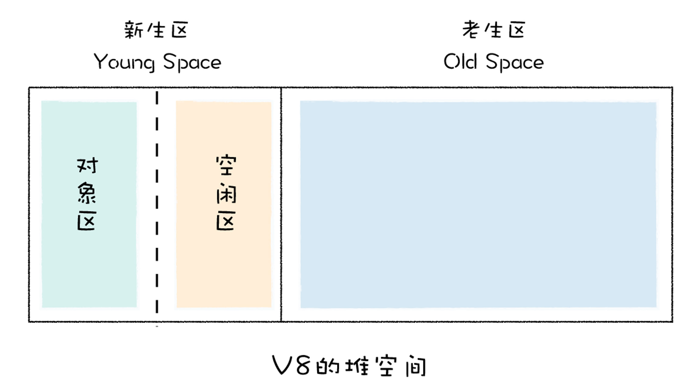
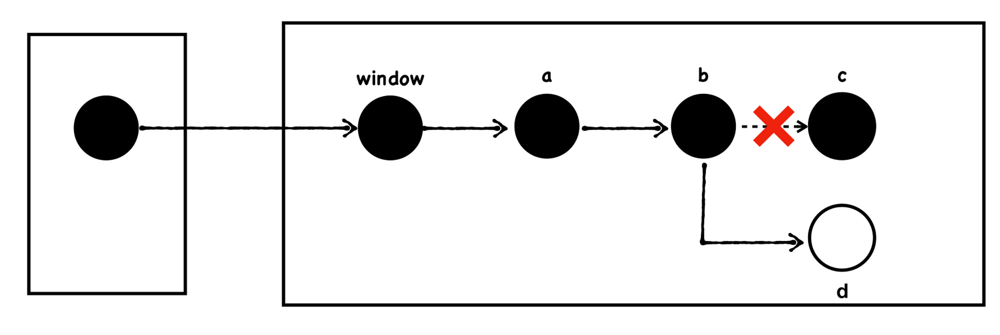

前言
就像一个服务端开发程序员需要掌握操作系统运行机制一样，前端开发程序员必须对浏览器的运行机制清晰掌握。了解释浏览器的机制是做出高性能web页面的基础。
同样浏览器也是运行在操作系统之上的软件，科技发展到今天。用户对web服务的质量要求越来越高。表现在软件的UI界面，需要首屏更早的显示，页面交互更加的人性化和智能化。浏览器也在日益完善这些需求之中不断进化，软件架构日趋完善。截止到现在，一个浏览器的构架越来越复杂，其复杂程度也越来越趋向操作系统内核。
1. 现代浏览器架构概述
以chrome浏览器为例
浏览器是个多进程的架构，但启动chrome，打开一个web页面的时候。我们通过chrome的任务管理器能准确看到，尽管只启动一个页面，浏览器多出了8个进程。
1.1 浏览器进程架构
1.1.1 浏览器进程
浏览器主进程，主要负责界面显示，用户交互，子进程管理，同时提供存储等功能；
1.2 渲染进程（标签页：chrome.storage-Chrome）
核心任务是将 HTML、CSS 和 JavaScript 转换为用户可以与之交互的网页，排版引擎 Blink 和 JavaScript 引擎 V8 都是运行在该进程中；
默认情况下，Chrome 会为每个 Tab 标签创建一个渲染进程。值得注意的是，如果页面有iframe，那么iframe的页面也会运行在单独的进程中！
出于安全考虑，渲染进程都是运行在沙箱模式下。
1.3 GPU进程
绘制UI界面
1.4 Network Service
单拎出来一个进程，管理整个浏览器的网络资源加载；
1.5 备用渲染程序
1.6 Storage Service
使用chrome.storage API可以存储，检索和跟踪对用户数据的更改
1.7 扩展程序（插件进程）
负责插件的运行，因插件容易崩溃，所以需要通过插件进程来隔离，以保证插件进程崩溃不会对浏览器和页面造成影响；
1.2 多进程架构的好处
浏览器并非一开始就是多进程架构，软件之所以革新，主要的原因无非是，现有的软件功能和使用体验跟不上用户需求，远远落后于竞争对手。 源代码变💩山迭代功能困难。
早期的浏览器（为IE6）为例。
IE6是单进程的也是单标签的，也就是说一个页面一个窗口。所有页面运行在一个主线程中的，意味着，所有的页面都共享着同一套JavaScript运行环境，同样，对于存储Cookie也都是在一个线程里面操作的。
早期浏览器厂商基于IE6开发多标签的形式，发现其中的一个标签页面的卡顿都会影响到整个浏览器。
基于卡顿的原因，浏览器厂商就开始尝试支持页面多线程，也就是让部分页面运行在单独的线程之中，运行在单独的线程之中，意味着每个线程拥有单独的JavaScript执行环境，和Cookie环境，这时候问题就来了：
比如A站点页面登陆一个网站，保存了一些Cookie数据到磁盘上，再在当前线程环境中保存部分Session数据，由于Session是不需要保存到硬盘上的，所以Session只会保存在当前的线程环境中。这时候再打开另外一个A站点的页面，假设这个页面在另外一个线程中里面，那么它首先读取硬盘上的Cookie信息，但是，由于Session信息是保存在另外一个线程里面的，无法直接读取，这样就要实现一个Session同步的问题，由于IE并没有源代码，所以需要自己实现这部分功能。
Session问题解决了，但是假死的问题依然有，因为进程内使用了一个窗口，这个窗口是依附到浏览器主窗口之上的，所以他们公用一套消息循环机制，这也就意味这一个窗口如果卡死了。也会导致整个浏览器的卡死。
这里还要提一下为什么Chrome中的一个页面假死不会影响到主窗口呢？
这是因为chrome输出的实际上图片，然后浏览器端把图片贴到自己的窗口上去，在Chrome的渲染进程内，并没有一个渲染窗口，输出的只是图片，如果卡住了，顶多图片不更新了。
一些基于IE6开发的浏览器厂商实现这一套技术花了四五年时间，等这套技术差不多成熟时，Chrome发布了。
诚然，我们看到了历史进程。但很多东西依然需要结合时代背景去看。硬件设备近二十年更新实在太快，IE6被发明的那个时代，电脑多是单核架构的。不像现在的电脑，几乎都是4核起步， 有条件的大多数都是8核的机器。所以，IE6在那个时候直接开发多进程的浏览器模型且不说当时的电脑带不带的动，怕是能给喷死。
所以结合历史来看，从单进程架构升级到多进程架构也是自然而然的事情
多进程模型提升了浏览器的稳定性、流畅性和安全性，但同样不可避免地带来了一些问题：
因为每个渲染进程都需要加载js运行环境，这就意味着浏览器总体上更消耗内存资源，
第二就是架构复杂度高，等前面的各种之父老去，后生接手困难。
但总体来说，chrome还是以一个非常快的速度在迭代，现在的普通软件应用开发中，前端也越来越重。因此，对于一个开发来说，能跟还是一定得跟住的；
2. HTML，CSS，Js等文件是如何变成页面的
当用户键入一个url之后，数据包通过漫长的运输跑到目标服务器，再返回到浏览器客户端，直到收到第一个html文件开始。浏览器做了哪些操作才能呈现出页面的呢？
我人为的将它们拆分为两个阶段，第一个阶段是创建阶段，第二个阶段为等待更新阶段，第三个阶段为消亡阶段；
之所以人为区分三个阶段，是因为浏览器在每个阶段所做的事情，并不尽相同。尤其是第一阶段和第二阶段，第一阶段的优化重点是如何尽早获取到服务端的相关资源；
第二阶段则需要了然页面的循环机理，优化的重心是不要写出死循环代码，从而卡住页面，还要知道内存是如何管理，不能写出需要频繁GC的页面，造成页面卡顿。
第三阶段，要关注的地方虽然不多，但是在一些实际开发场景中，比如对于关闭页面之后如何有效进程数据提交；
2. 1 创建阶段
创建阶段指的是，浏览器将请求过来的html 代码字符串， css代码字符串，js代码字符串解析之后，然后首次绘制出第一帧并呈现到显示器上的这一过程。
创建阶段同样可以理解为页面加载阶段的场景，在这个阶段，用户的最高诉求是在尽可能短的时间内看到页面，至于招呼和合成并不是这个阶段的核心诉求，因此我们需要调整策略，在加载阶段将页面解析，js脚本执行等任务调整为优先级最高的队列，降低交互合成这些队列的优先级；
上面架构的章节有提到，每个标签页都是一个渲染进程，那每个渲染进程中也分别对应一个呈现引擎实例。所谓呈现引擎，功能诸多，下面将几种介绍其主要用途，即显示使用css格式化的HTML内容和图片；
2.1.1 呈现流程的基本流程
渲染流水线

按照渲染的时间顺序，流水线可分为如下几个子阶段： 构建DOM树、样式计算、布局阶段、分层、绘制、分块、光栅化和合成。
2.1.1.1 构建DOM树
将html代码字符串转化为计算浏览器方便读取的对象结构，这部分就涉及词法分析和语法分析的内容了。最终生成的DOM树形结构就存到当前渲染进程的内存当中了。
通过DOM编程提供的API接口，就能访问到对应的DOM节点对象了。
浏览器的容错机制
在浏览HTML网页时从来不会看到html语法无效的错误，这是因为浏览器会纠正任何无效的内容，然后继续工作；
1 | <html> |
截止到这里，浏览器已经生成DOM树了，但是DOM节点的样式我们依然不知道，让DOM节点拥有正确的样式，这就需要样式计算了；
HTML 解析器是等整个 HTML 文档加载完成之后开始解析的，还是随着 HTML 文档边加载边解析的？
HTML 解析器并不是等整个文档加载完成之后再解析的，而是网络进程加载了多少数据，HTML 解析器便解析多少数据。
网络进程接收到响应头之后，会根据响应头中的 content-type 字段来判断文件的类型，比如 content-type 的值是“text/html”，那么浏览器就会判断这是一个 HTML 类型的文件，然后为该请求选择或者创建一个渲染进程。渲染进程准备好之后，网络进程和渲染进程之间会建立一个共享数据的管道，网络进程接收到数据后就往这个管道里面放，而渲染进程则从管道的另外一端不断地读取数据，并同时将读取的数据“喂”给 HTML 解析器。你可以把这个管道想象成一个“水管”，网络进程接收到的字节流像水一样倒进这个“水管”，而“水管”的另外一端是渲染进程的 HTML 解析器，它会动态接收字节流，并将其解析为 DOM。
2.1.1.2 样式计算（Recalculate Style）
样式计算的目的是为了计算出 DOM 节点中每个元素的具体样式，这个阶段大体可分为三步来完成。
2.1.1.2.1 样式计算的步骤
把 CSS 转换为浏览器能够理解的结构
首先css代码可以写在页面的各个地方
1 | <html> |
和 HTML 文件一样，浏览器也是无法直接理解这些纯文本的 CSS 样式，所以当渲染引擎接收到 CSS 文本时，会执行一个转换操作，将 CSS 文本转换为浏览器可以理解的结构——styleSheets
类似DOM树，styleSheets在内存中也可以查询和修改，这为后面的样式操作提供基础；
转换样式表中的属性值，使其标准化
1 | body { font-size: 2em } |
转化后为
1 | body { font-size: 32px } |
将属性值标准化，有利于后续进一步操作的便捷度；这点类似软件分层机制；
计算出 DOM 树中每个节点的具体样式
接下来就需要计算 DOM 树中每个节点的样式属性
这就涉及CSS继承的规则和层叠规则了；
CSS继承，CSS继承就是每个 DOM节点都包含有父节点的样式。
1 | body { font-size: 20px } |

从图上可以看出，所有子节点都继承了父节点样式。
样式计算过程中的第二个规则是样式层叠，样式层叠是CSS的一个基本特征，它是一个定义了如何合并来自多个源的属性值的算法，它在CSS处于核心位置
总之，样式计算阶段的目的是为了计算出 DOM 节点中每个元素的具体样式，在计算过程中需要遵守 CSS 的继承和层叠两个规则。这个阶段最终输出的内容是每个 DOM 节点的样式，并被保存在 ComputedStyle 的结构内。
2.1.1.2.2 the order of processing scripts and styles sheets
在研究一个网页的中所有元素加载顺序的时候，我们不妨去想一个问题。我们如何保证一个页面的一致性。
浏览器是一个多进程的结构，为提高机器的使用率，我们可以在每个进程中可以创建多个线程。结合到页面的时候，我们能不能让多个线程来操作页面元素或者绘制页面呢？
答案显然是不行，在上层文档 我们总能看到DOM文档渲染是同步的，是按着顺序执行。多线程的不稳定让我们在执行同样代码的时候可能产生出不同的视图。比如两个线程同时操作一个DOM节点，其中一个线程给字体变成红色，两一个线程给字体变成黄色。那么最终的结果，这个元素的字体颜色会时而红，时而黄的。
这显然是不能接受，因此渲染进程在渲染页面的时候，一定是运行在一个单线程上的；
第二，浏览器能识别HTML，CSS，JS代码。但也并不意味着浏览器是由js语言开发的。（这么说可能有点蠢，但对于初次了解浏览器机制的非科班开发者并非一无是处），我们明确一个事实，浏览器是运行在操作系统上的，我们的mac os windows 有无界面的linux均能安装浏览器比如chrome。
nodejs程序，浏览器都是直接运行在操作系统上，但我们的前端页面却是运行在浏览器上面的。像浏览器这种容器应用，必然需要追求极致性能。那GC类语言（GC类语言在进行垃圾回收的时候，会全停顿，那对跑在浏览器上面的web页面是致命的）自然是不能用了。主流的非GC语言就C/C++了。C/C++是原生的系统级语言，可以直接调用操作系统原生API，性能最强。
那既然如此，为何页面还要用发明一种js语言去开发网页呢？为何不直接用C/C++去开发网页。这就要追溯当时那个时期，开发者也就只想在html页面操作个表单罢了。C/C++语言学习曲线陡峭，哪怕直到今天依然是难学难用的计算机语言。
那最终便设计出了诸如 html，css，js这几种标记和脚本语言来进行页面的开发，html描述一个界面的骨架，css绘制这个骨架的样式，js负责定义这个骨架的行为。
这里面牵涉到一个问题，生成DOM树，生成CSSOM是C++干的，可不是js干的，这一定需要明确。我们先不提解释器，也不提V8 jsbinding等，我们先粗暴的理解，html，css，js翻译成C++语言，然后统一在渲染进程的某一个固定的线程去执行。单线程环境里面不存在插队，大家在个什么位置他就是个什么位置。人家在执行的时候，你就乖乖等着，同样，你执行的时候，别人也坐着没动弹。就便是传说中的
js引擎和渲染线程互斥。
如果对js语言底层的实现以及浏览器的架构模型没有概念的话，是很难理解这句话的意思。
我们结合上面说的，可以粗暴的先理解为，翻译成C++的那部分html，css代码跟翻译成C++的那部分js代码在运行引擎上是互斥的。是不能同时运行的。
为啥，我们想一个页面。html是DOM结构对吧。js可以操作DOM对吧。那这两个必然不能一直执行吧。一起执行遇到冲突听谁的，那不乱套了吗？
html和css能不能一起执行？为什么不能呢？html生成的DOM结构是主体，css生成样式，css就是装修，装修刷墙粉面又不会改变主体，那一起呗。
那css和js能不能一直执行？这个就不能了，因为js能改变css样式啊，那两个一起执行遇到冲突听谁的？
那问题就清晰了,以下面这段代码为例
1 | <html> |
从html标签开始，C++代码开始解析这个html代码字符串生成DOM，到head标签之后碰到一个script标签，这个时候生成DOM的程序就停了。
执行到 JavaScript 标签时，暂停整个 DOM 的解析，执行 JavaScript 代码，不过这里执行 JavaScript 时，需要先下载这段 JavaScript 代码。这里需要重点关注下载环境，因为JavaScript 文件的下载过程会阻塞 DOM 解析，而通常下载又是非常耗时的，会受到网络环境、JavaScript 文件大小等因素的影响。
不过 Chrome 浏览器做了很多优化，其中一个主要的优化是预解析操作。当渲染引擎收到字节流之后，会开启一个预解析线程，用来分析 HTML 文件中包含的 JavaScript、CSS 等相关文件，解析到相关文件之后，预解析线程会提前下载这些文件。
再回到 DOM 解析上，我们知道引入 JavaScript 线程会阻塞 DOM，不过也有一些相关的策略来规避，比如使用 CDN 来加速 JavaScript 文件的加载，压缩 JavaScript 文件的体积。等index.js执行完，这个时候js引擎就停了，就又开始执行生成DOM的程序了。就便是互斥；
另外，如果 JavaScript 文件中没有操作 DOM 相关代码，就可以将该 JavaScript 脚本设置为异步加载，通过 async 或 defer 来标记代码，使用方式如下所示：
1 | <script defer src="index.js"></script> |
这里不得不提到 defer和async，defer是让浏览器别管我，你自己先解析你的DOM吧。我会在你解析完整个页面的时候才执行。那这就很高效了。我的首屏可以不受加载js脚本的影响了；
async是异步脚本，就比较自由。加载完了就立即执行，这种脚本必然就不会轮到主渲染线程来执行了。它应该是渲染进程创建出来的其他线程来执行的；
而使用了 defer 标记的脚本文件，需要在 DOMContentLoaded 事件之前执行。
我们上面提到css和js，这个当然css会阻塞js的执行。chrome表现的要优秀一些，它的机制是，只有当脚本尝试访问样式属性可能尚未加载的样式表影响时，它才会禁止该脚本。
一句话总结就是说，DOM的生成会被js脚本阻塞，css的解析同样有几率阻塞js脚本的执行（当js中存在访问未加载充分的样式表的时候，也就是说js依赖该样式表）。所以CSS优先级是最高的，其次是js，DOM碰到js要等等，当然html css一对好基友彼此不耽误，可以同时解析；
2.1.1.2.3 白屏优化
通常情况下的瓶颈主要体现在下载 CSS 文件、下载 JavaScript 文件和执行 JavaScript。
- 通过内联 JavaScript、内联 CSS 来移除这两种类型的文件下载，这样获取到 HTML 文件之后就可以直接开始渲染流程了。
- 但并不是所有的场合都适合内联，那么还可以尽量减少文件大小，比如通过 webpack 等工具移除一些不必要的注释，并压缩 JavaScript 文件。
- 还可以将一些不需要在解析 HTML 阶段使用的 JavaScript 标记上 sync 或者 defer。
- 对于大的 CSS 文件，可以通过媒体查询属性，将其拆分为多个不同用途的 CSS 文件，这样只有在特定的场景下才会加载特定的 CSS 文件。
2.1.1.3 布局树构建（layout）
现在，我们有 DOM 树和 DOM 树中元素的样式，但这还不足以显示页面，因为我们还不知道 DOM 元素的几何位置信息。那么接下来就需要计算出 DOM 树中可见元素的几何位置，我们把这个计算过程叫做布局。
2.1.1.3.1 创建呈现树
就是结合DOM和CSSOM，将需要隐藏的节点，隐藏掉。把每个节点的样式信息写进去。
2.1.1.3.2 布局计算
布局计算就是把每个节点的信息计算出来并写到该节点中，比如每个节点的宽高位置，计算每个布局点的节点坐标；这个过程就相对复杂了；
2.1.1.4 分层
我们知道CSS代码里面有个z-index,渲染引擎还需要为特定的节点生成专用的图层，并生成一棵对应的图层树（LayerTree）,然后绘制图层
2.1.1.5 绘制（paint）
在绘制阶段，系统会遍历呈现树，并调用呈现器的“paint”方法，将呈现器的内容显示在屏幕上。绘制工作是使用用户界面基础组件完成的。
全量绘制和增量绘制
和布局一样，绘制也分为全局（绘制整个呈现树）和增量两种。在增量绘制中，部分呈现器发生了更改，但是不会影响整个树。更改后的呈现器将其在屏幕上对应的矩形区域设为无效，这导致 OS 将其视为一块“dirty 区域”，并生成“paint”事件。OS 会很巧妙地将多个区域合并成一个。在 Chrome 浏览器中，情况要更复杂一些，因为 Chrome 浏览器的呈现器不在主进程上。Chrome 浏览器会在某种程度上模拟 OS 的行为。展示层会侦听这些事件，并将消息委托给呈现根节点。然后遍历呈现树，直到找到相关的呈现器，该呈现器会重新绘制自己（通常也包括其children）。
绘制顺序
- background color
- background image
- border
- children
- outline
2.1.1.6 重排（relayout）与重绘（replaint）
简单列出渲染流水线的核心步骤
1 | DOM -> Style -> Layout -> Layer -> Paint |
重排就是更新几何属性吧，比如改变了位置，大小，布局等等。重排需要重新走一遍，Layout -> Layer -> Paint
重绘就是改变某些元素的颜色，这样只需要 Paint就行了；
当然你改一个既不会改变布局，又不会改变颜色的属性，那流水线会跳过这些步骤，直接走合成阶段；
1 | tiles -> raster -> draw quad -> display |
2.2 等待更新阶段
等待更新阶段，指的是在创建阶段之后（首次渲染之后）用户可以自由操作页面，页面上也可能自由自由请求服务端，或者服务端定时推送数据给页面做呈现。直到用户使用完之后关掉当前标签页的这个过程。这个阶段同样也可以理解为交互阶段。
这里需要陈述一下，等待更新阶段是杜撰的一个概念，可能在其他资料上面也不会查得到。基于web页面的生命周期，我将其人为割裂为，页面首次显示到浏览器视口中，接下来在用户关闭此标签页的时候，浏览器程序并不是静止不动，而是一直在运行中的，大概是怎么运行的呢？代码大概就像下面这个样子；
1 | // 这是一个近乎无限的循环。 |
为了解释清楚这个阶段，我先聊聊显示器和渲染帧；
2.2.1 渲染帧
提到帧数，思绪回到十年前，去网吧玩玩魔兽世界的时候。我第一在乎的是机器能达到多少帧？尽管那时候不知道帧数到底是什么意思，但是明白帧数越高越好，而帧数一旦低于多少，说明机器很卡。也会经常听到网吧有人抱歉，“我的机器卡成幻灯片了”
幻灯片有什么特征？幻灯片在切换时候会有一个明显的缓动动画，比如淡入淡出啊 缓动啊之类的。
我们再说显示器，为何显示器能呈现页面啊。首先，显示器是由一个一个很小的晶体管组合而成，每个晶体管是一个像素点，像素点能显示所有不同的颜色。当所有像素点同时点亮的时候，就形成了一幅画面。
结合本能，我们应该知道。决定游戏界面质量的无非是显卡，GPU，显示器这些关键字了；
在显卡中有一块叫做前缓冲区的地方，这里存放着显示器要显示的图像，显示器回按照一定的频率来读取前缓冲区，并将前缓冲区中的图像显示在显示器上，不同的显示器读取的频率是不同的，通常情况下是60HZ，也就是说显示器会每间隔1/60秒就读取一次前缓冲区； 为何是60HZ，因为当一个显示器达到60HZ的时候，人眼就很难觉察页面显示器在跳动，而是精致的画面了。那么动画效果将会特别流畅，我们说动画不过就是一张张有差异的图片在高速的切换，这个高速有多高。就是1/60秒次切换一次就可以了。达到这个帧率，足够欺骗人眼了；
接着说GPU，如果浏览器要更新显示的图片，那么浏览器会将新生成的图片提交到显卡的后缓冲区中，提交完成之后，GPU会将缓冲区和前缓冲区交换位置，也就是前缓冲区变成后缓冲区，后缓冲区变成前缓冲区，这就保证了显示器下次能读取到GPU中最新的图片；
这时候我们会发现，显示器从前缓冲区读取图片，和浏览器生成新的图像到后缓冲区的过程是不同步的；
这种显示器读取图片和浏览器生成图片不同步，容易造成诸多问题，
比如丢帧，或者卡顿。为了解决这个问题，就需要将显示器的时钟同步周期和浏览器生成页面的周期绑定起来；
当显示器将一帧画面绘制完成后，并在准备读取下一帧之前，显示器会发出一个垂直同步信号给GPU，简称VSync
具体来讲就是，当GPU接收到Vsync信号后，会将该信号同步给浏览器，浏览器进程再将其同步到对应的渲染进程，渲染进程接收到该信号，就可以准备绘制新的一帧；
接下来，我们思考一个问题。我们说一个流畅的页面的最好满足60帧，每帧的时间大概是16.67毫秒。
不知道我们是否还记得页面创建阶段的渲染流水线。
1 | DOM -> Style -> Layout -> Layer -> Paint |
也就是说DOM解析也好，style解析也好。最终都是为了Paint，
那么在交互阶段，当有js脚本改变DOM的时候。页面同样需要重新走一遍Layout 之后的渲染流水线；而且这一遍最好在16.66毫秒之内完成。不然，会跨帧，频繁跨帧的话，那必然导致页面帧数极速下跌，页面将变得卡顿或者丢帧；
ok，那既然在16.66毫秒之内完成。那我们来继续盘点一下这16.66毫秒之内都要执行哪些东西呢？
2.2.2 schedule
我们前面说，渲染进程是用一个单线程来执行js脚本和页面绘制的。js引擎和页面绘制单元是互斥的。
那既然是单线程的，这条生产线又有那么多的事情要干。那具体谁先谁后呢？比如用户的event，js引擎的异步代码，web api（比如requestAnimateFrame，requestIdleCallback等等）

解释这张图之前，我先强调一下，前端领域经常提的宏队列 微队列。跟这张图没直接关系啊。这张图是整个浏览器渲染线程做的事情，而宏队列和微队列只是js引擎里面调度，js是单线程的和渲染进程这个单线程不是一码事儿；
说回，这个渲染帧的调度，
- 首先最高优先级是用户事件；
- 其次会去检查js引擎中定时器相关的程序，有没有已经到点了的。当然如果该任务中含有micro的任务，也一并执行了
- 接下来是BOM事件；
- 再然后是requestAnimationFrame
- layout
- paint
- requestIdleCallback
遇事不决直接上代码
1 | window.requestAnimationFrame(animation); |

当然细心的小朋友会发现，有的时候，requestAnimationFrame会跑到setTimout之前，有的时候 requestIdleCallback会执行的更加靠后；
首先，rAf的执行时机是尽可能的接近帧头。而setTimeout虽然给定了一个0毫秒，但还是取决于当时轮训消息队列的时候，是否有取到这个任务，有取到就有机会执行，没取到就先执行rAf了。再说rIC，rIC的执行时机尽可能放在每一帧的末尾去执行。当然前提是该帧有空余时间，没有空余时间也不行。如果什么时候那一帧有空闲，就有机会执行了。
好了，到这里我们知道每个渲染帧在干着哪些事情了。
我们再review一下这些阶段，我们发现我们不能在rAf里面做复杂计算，这种每一帧都需要执行的函数，如果回调过于复杂，那带来的结果就是一些耗时长的任务会横穿一个或多个帧，导致掉帧，页面卡顿；
这里提一嘴react fiber架构，react fiber架构解决什么问题？ 为什么需要重构到react fiber架构，为什么react15的架构不能满足需求了；
这是因为 react 在更新的时候需要做diff运算，react的diff是从根节点diff的。这种diff的运算量大，长时间占据渲染帧。导致性能瓶颈。
后期react fiber架构的出现，主要解决两个问题，首先引进了链表式的数据结构，可以随时存储当前diff的状态，这就解决了单次diff长期占据渲染帧的问题，其次，让每个fiber节点的运算时机尽量在帧尾做，避开渲染帧的正常渲染周期。这样就在维持页面性能的同时，也给足了react节点的计算时间；总体而言，fiber更加的细粒度化了；对资源的使用也更加细粒度化了；
2.3 消亡阶段
消亡阶段很好理解，就是点击浏览器标签页的关闭按钮，或者在任务管理器中选择某个页面渲染进程，点右下角的结束进程按钮；当执行这些操作之后，浏览器通过操作系统释放相关渲染进程的所有资源；
3. 浏览器中的V8引擎
通过上面的阐述，我们大概知道了js引擎在整个浏览器渲染进程中的位置。它的使命和它的能力范围；
3.1 单线程的js是如何实现异步的
首先，灵魂拷问，什么是异步？
在计算机系统中，有一些任务一旦执行，比如socket编程。鬼都不晓得啥时候能执行完。所以我不能一直死等着吧。
那我能不能先干点别的事儿。好在，计算机系统设计的足够健壮。支持多任务并行；
表现在实际编程中就是——多线程编程。当一个socket请求进来，要求去读取数据库10万条数据，那我当前进程环境中，创建一个子线程（更高级一点，我会在进程中维护一个线程池。如果有空闲线程，我会让空闲的线程去承接时间未知的IO任务。如果没有空闲，再新建不迟。当然这个线程池上限还取决于硬件环境以及，当前和数据库那边的连接情况来设定，并不是随便给的一个值。），用来处理这条请求，并注册一个回调，如果你10万条数据拿到手了，你告诉我一声。
然后主进程接着迎接下一个socket请求。
这个时候10万条好了，主线程拿着10万条数据，然后告诉该子线程去线程池候命。自己唤醒当初客户端connection对象，然后将字节写入该connction。此时，如无后续连接进来，free掉该connection。
在上面这个事例中，多线程模型就是对异步支持的一种具体表现。用线程池的设计思路去解决IO任务耗时不稳定的问题；
那我们js引擎怎么弄呢？众所周知，js是单线程的。单线程怎么支持异步呢。
那就是第二种方案了 进入队列排队
在一个单线程环境调度，本来就不是一件容易的事情。
js引擎将 js代码人为分成拆分成不同的任务
3.1.1 script
首先，每个script标签包裹的是一个任务, 当解析到script标签的时候，js引擎会将两个script包裹的代码依次放入队列当中；
1 | <script> |
然后在另一端
1 | while(isHasTask) { |
这个死循环会一直试图从队列中读取任务，然后执行。直到队列中所有任务执行殆尽，然后挂起出让调度器等待。
1 | script1 |
上面代码执行出这个结果，我们得出结论，除了script标签，setTimeout这种定时器代码也会被当作一个任务放在队列当中。然后Promise这种微任务会在当前任务执行完毕并释放之前全部执行完毕。
为什么有了任务队列，还要弄个微任务呢。这其实是调度器的一个取舍问题。简单说 就是任务队列颗粒度太大了。
3.1.2 其他宏任务
- 渲染事件（如解析 DOM、计算布局、绘制）；
- 用户交互事件（如鼠标点击、滚动页面、放大缩小等）；
- JavaScript 脚本执行事件；
- 网络请求完成、文件读写完成事件。
3.1.3 其他微任务
第一种方式是使用 MutationObserver 监控某个 DOM 节点
3.2 任务队列与阻塞
直接上代码
1 | <button onclick="console.log('click me')">click me</button> |
我们发现，button点击无效。页面一直转圈状态卡死
1 | <button onclick="console.log('click me')">click me</button> |
跟上面代码类似，但是button点击依然可以输出click me；
1 | <button onclick="console.log('click me')">click me</button> |
迅速栈溢出；
分别来陈述一下原因；
首先，说最后一个同步操作，这个很好理解。大部分编程语言的内存模型都存在堆栈结构，栈上存放着函数作用域的执行语句。这个栈虽然足够深，但也不是深到无限。一次同步任务会一次性在一个栈空间的生命周期执行到结束。当执行结束后，栈被回收，操作系统释放栈上内存。直到任务队列下一个任务拿出来，才重新将其函数语句拉入栈中来计算。这个loop函数属于一个任务。所以，栈空间没理由中途释放。那无限递增必然造成栈溢出。
说中间这个setTimeout，setTimeout会创建一个新任务，当前任务执行完毕之后，栈空间会被释放。所以，这段代码虽然很蠢。但并不是错误代码。早年前，很多人用这种方式做动画。它做动画的坏处在于定时器的间隔无法根渲染帧同步。所以效果肯定不如每一帧都会执行的rAf。
setTimeout的诸多问题
1 | function bar() { |
- 如果当前任务执行时间过久，会影响延迟到期定时器任务的执行
在使用 setTimeout 的时候，有很多因素会导致回调函数执行比设定的预期值要久，其中一个就是当前任务执行时间过久从而导致定时器设置的任务被延后执行。
- 如果 setTimeout 存在嵌套调用，那么系统会设置最短时间间隔为 4 毫秒
1 | static const int kMaxTimerNestingLevel = 5; |
- 未激活的页面，setTimeout 执行最小间隔是 1000 毫秒
如果标签不是当前的激活标签，那么定时器最小的时间间隔是 1000 毫秒，目的是为了优化后台页面的加载损耗以及降低耗电量。
- 延时执行时间有最大值
Chrome、Safari、Firefox 都是以 32 个 bit 来存储延时值的，32bit 最大只能存放的数字是 2147483647 毫秒，这就意味着，如果 setTimeout 设置的延迟值大于 2147483647 毫秒（大约 24.8 天）时就会溢出，这导致定时器会被立即执行。
1 | setTimeout(showName,2147483648);// 会被理解立即调用执行 |
最后说Promise，为什么会卡死。是因为Promise产生的是当前任务的微任务，这里强调一个重点是，微任务和宏任务一样，不会公共栈的同一个生命周期。什么意思呢？就是说，当前一个微任务回调执行完了，会释放栈空间，然后再从栈中取任务拉过来执行；届时又是一个全新的栈环境。所以，当前这个宏任务被永远夯住。任务队列的其他任务，任何优先级很高的 user events都休想执行。
所以，这也是为什么微任务会像同步函数一样 有阻塞线程的能力；
说到阻塞，我们需要明晰一个知识细节。js引擎的阻塞 根操作系统维度上的阻塞差不多是一码事儿。
操作系统的阻塞，只是某个线程阻塞，
1 | select { |
比如上面这句代码，它阻塞了当前线程。但是这并不影响进程内其他线程的运行。kernel会将当前阻塞的线程挂起。在调度的时候也不会想起他；
而在js环境中的阻塞，比如下面这段代码
1 | <body> |
我们发现界面的button都渲染不出来，页面也一直在无限加载。其实这也是一种挂起。也能从侧面渲染线程和js的执行确实是在一个单线程的环境中的。
4. 浏览器缓存
4.1 HTTP缓存
减少不必要的网络传输，缓解服务器压力
4.1.1 强缓存
不需要发送请求到服务端，直接读取浏览器本地缓存，在 Chrome 的 Network 中显示的 HTTP 状态码是 200 ，在 Chrome 中，强缓存又分为 Disk Cache（存放在硬盘中）和 Memory Cache（存放在内存中），存放的位置是由浏览器控制的。是否强缓存由 Expires、Cache-Control 和 Pragma 3 个 Header 属性共同来控制。
Expires
Expires 的值是一个 HTTP 日期，在浏览器发起请求时，会根据系统时间和 Expires 的值进行比较，如果系统时间超过了 Expires 的值，缓存失效。由于和系统时间进行比较，所以当系统时间和服务器时间不一致的时候，会有缓存有效期不准的问题。Expires 的优先级在三个 Header 属性中是最低的。
Cache-Control
Cache-Control 是 HTTP/1.1 中新增的属性，在请求头和响应头中都可以使用，常用的属性值如有：
- max-age：单位是秒，缓存时间计算的方式是距离发起的时间的秒数，超过间隔的秒数缓存失效
- no-cache：不使用强缓存，需要与服务器验证缓存是否新鲜
- no-store：禁止使用缓存（包括协商缓存），每次都向服务器请求最新的资源
- private：专用于个人的缓存，中间代理、CDN 等不能缓存此响应
- public：响应可以被中间代理、CDN 等缓存
- must-revalidate：在缓存过期前可以使用，过期后必须向服务器验证
Pragma
Pragma 只有一个属性值，就是 no-cache ，效果和 Cache-Control 中的 no-cache 一致，不使用强缓存，需要与服务器验证缓存是否新鲜，在 3 个头部属性中的优先级最高。
本地通过 express 起一个服务来验证强缓存的 3 个属性，代码如下：
1 | const express = require('express'); |
第一次加载，页面会向服务器请求数据，并在 Response Header 中添加 Cache-Control ，过期时间为 10 秒。
第二次加载，Date 头属性未更新，可以看到浏览器直接使用了强缓存，实际没有发送请求。
过了 10 秒的超时时间之后，再次请求资源：
当 Pragma 和 Cache-Control 同时存在的时候，Pragma 的优先级高于 Cache-Control。
4.1.2 协商缓存
当浏览器的强缓存失效的时候或者请求头中设置了不走强缓存，并且在请求头中设置了 If-Modified-Since 或者 If-None-Match 的时候，会将这两个属性值到服务端去验证是否命中协商缓存，如果命中了协商缓存，会返回 304 状态，加载浏览器缓存，并且响应头会设置 Last-Modified 或者 ETag 属性。
ETag/If-None-Match
ETag/If-None-Match 的值是一串 hash 码，代表的是一个资源的标识符，当服务端的文件变化的时候，它的 hash 码会随之改变，通过请求头中的 If-None-Match 和当前文件的 hash 值进行比较，如果相等则表示命中协商缓存。ETag 又有强弱校验之分，如果 hash 码是以 “W/“ 开头的一串字符串，说明此时协商缓存的校验是弱校验的，只有服务器上的文件差异（根据 ETag 计算方式来决定）达到能够触发 hash 值后缀变化的时候，才会真正地请求资源，否则返回 304 并加载浏览器缓存。
Last-Modified/If-Modified-Since
Last-Modified/If-Modified-Since 的值代表的是文件的最后修改时间，第一次请求服务端会把资源的最后修改时间放到 Last-Modified 响应头中，第二次发起请求的时候，请求头会带上上一次响应头中的 Last-Modified 的时间，并放到 If-Modified-Since 请求头属性中，服务端根据文件最后一次修改时间和 If-Modified-Since 的值进行比较，如果相等，返回 304 ，并加载浏览器缓存。
本地通过 express 起一个服务来验证协商缓存，代码如下：
1 | const express = require('express'); |
第一次请求资源:
第二次请求资源，服务端根据请求头中的 If-Modified-Since 和 If-None-Match 验证文件是否修改。
我们再来验证一下 ETag 在强校验的情况下，只增加一行空格，hash 值如何变化，在代码中，我采用的是对文件进行 MD5 加密来计算其 hash 值。
注：只是为了演示用，实际计算不是通过 MD5 加密的，Apache 默认通过 FileEtag 中 FileEtag INode Mtime Size 的配置自动生成 ETag，用户可以通过自定义的方式来修改文件生成 ETag 的方式。
为了保证 lastModified 不影响缓存，我把通过 Last-Modified/If-Modified-Since 请求头删除了，源码如下：
1 | const express = require('express'); |
第一次和第二次请求如下：
然后我修改了 test.js ，增加一个空格后再删除一个空格，保持文件内容不变，但文件的修改时间改变，发起第三次请求，由于我生成 ETag 的方式是通过对文件内容进行 MD5 加密生成，所以虽然修改时间变化了，但请求依然返回了 304，读取浏览器缓存。
ETag/If-None-Match 的出现主要解决了 Last-Modified/If-Modified-Since 所解决不了的问题：
- 如果文件的修改频率在秒级以下，Last-Modified/If-Modified-Since 会错误地返回 304
- 如果文件被修改了，但是内容没有任何变化的时候，Last-Modified/If-Modified-Since 会错误地返回 304，上面的例子就说明了这个问题
在实际使用场景中，图片、不常变化的 JS 等静态资源都会使用缓存来提高页面的加载速度
4.2 浏览器缓存
浏览器的缓存存放在哪里，如何在浏览器中判断强制缓存是否生效？
from disk cache和from memory cache
Chrome的网络请求的Size会出现三种情况from disk cache(磁盘缓存)、from memory cache(内存缓存)、以及资源大小数值。

浏览器读取缓存的顺序为memory –> disk。 以访问https://github.com/xiangxingchen/blog为例 我们第一次访问时https://github.com/xiangxingchen/blog
关闭标签页，再此打开https://github.com/xiangxingchen/blog时
F5刷新时
简单的对比一下
浏览器可以在内存、硬盘中开辟一个空间用于保存请求资源副本。我们经常调试时在 DevTools Network 里看到 Memory Cache（內存缓存）和 Disk Cache（硬盘缓存），指的就是缓存所在的位置。请求一个资源时，会按照优先级（Service Worker -> Memory Cache -> Disk Cache -> Push Cache）依次查找缓存，如果命中则使用缓存，否则发起请求。这里先介绍 Memory Cache 和 Disk Cache。
200 from memory cache
表示不访问服务器，直接从内存中读取缓存。因为缓存的资源保存在内存中，所以读取速度较快，但是关闭进程后，缓存资源也会随之销毁，一般来说，系统不会给内存分配较大的容量，因此内存缓存一般用于存储较小文件。同时内存缓存在有时效性要求的场景下也很有用（比如浏览器的隐私模式）。
200 from disk cache
表示不访问服务器，直接从硬盘中读取缓存。与内存相比，硬盘的读取速度相对较慢，但硬盘缓存持续的时间更长，关闭进程之后，缓存的资源仍然存在。由于硬盘的容量较大，因此一般用于存储大文件。
下图可清晰看出差别：
200 from prefetch cache
在 preload 或 prefetch 的资源加载时，两者也是均存储在 http cache，当资源加载完成后，如果资源是可以被缓存的，那么其被存储在 http cache 中等待后续使用；如果资源不可被缓存，那么其在被使用前均存储在 memory cache。
CDN Cache
以腾讯 CDN 为例：X-Cache-Lookup:Hit From MemCache 表示命中 CDN 节点的内存；X-Cache-Lookup:Hit From Disktank 表示命中 CDN 节点的磁盘；X-Cache-Lookup:Hit From Upstream 表示没有命中 CDN。

4.3 http1，http2，http3概述
转载
为了更好理解文章，需要解释一下什么是RTT？
RTT是Round Trip Time的缩写，通俗地说，就是通信一来一回的时间。
TCP建立连接时间
最早大家使用TCP来运输HTTP，TCP想必大家很熟悉了，需要三次握手，建立了TCP虚拟通道，那么这三次握手需要几个RTT时间呢？
一去 （SYN）
二回 （SYN+ACK）
三去 （ACK）
相当于一个半来回，故TCP连接的时间 = 1.5 RTT 。
HTTP交易时间
这意味着，用户在浏览器里输入的网址URL，直到时间流逝了1.5RTT之后，TCP才开始运输HTTP Request，浏览器收到服务器的HTTP Response，又要等待的时间为：
一去（HTTP Request）
二回 （HTTP Responses）
故HTTP的交易时间 = 1 RTT
那么基于TCP传输的HTTP通信，一共花费的时间总和：
HTTP通信时间总和 = TCP连接时间 + HTTP交易时间 = 1.5 RTT + 1 RTT = 2.5 RTT
安全加密通信
随着互联网的爆发式增长，人类发现完全明文传输的HTTP通信很不安全。做为OSI七层参考模型的现实实现的TCP/IP协议，在设计之初没有考虑安全加密的环节。
互联网先驱Netscape公司，创造性发明了SSL（Secure Socket Layer），SSL位于TCP与HTTP之间，做为HTTP的安全供应商，全权负责HTTP的安全加密工作。
IP / TCP / SSL / [HTTP]
各个通信模块之间的站位如上所示，将HTTP用[ ]括起来，表示HTTP被SSL安全加密了。
随着SSL的名气攀升，互联网标准化组织IETF，觉得SSL是一个好东西，就拿来用了。
但SSL最初只是用于加密HTTP的，IETF觉得这是一个硬伤，为什么不能用来做为所有应用层协议的安全供应商呢？来传输邮件、文件、新闻等等。实现这一点很简单，只要在协议里增加一个Application Protocol 类型字段。
在Application Protocol 有一个类型是“IP”, 意味着TLS不仅可以运输应用层协议如HTTP、FTP，还可以运输IP，这就是Cisco Any Connect的应用场景。
TLS (Transport Layer Security)
于是，IETF在SSL 3.0版本的基础上，重新设计并命名了这个协议，其全新的名字为TLS，最初的版本为1.0版本。从其名字就可以看出，其核心使命就是保证传输层的安全。各个通信部门成员的占位与SSL占位一致：
IP / TCP / TLS / [HTTP]
到目前为止，浏览器支持的TLS版本为TLS 1.0、1.1、1.2，当然版本越高越成熟、越安全。
HTTPS
通常将TLS安全保护的HTTP通信，称之为HTTPS，以区别于没有TLS安全防护的HTTP明文通信。
交待了上文的背景知识，还是要回到本文的主题，来看看自从引入了TLS安全防护，看看HTTPS通信的RTT增加到了多少？
TLS 1.2
以1.2 版本为例，看看HTTPS通信一共要消耗几个RTT时间？
\1. 浏览器给服务器发送的Client Hello消息（一去）
首长好，我支持1.2版本，加密套件列表1、2、3…，以及我的随机码N1，请出示您的证件。
\2. 服务器给浏览器发送的Server Hello消息（二回）
同志们好，那就1.2版本通信吧，加密套件我选用1，我的随机码N2，ECDHE密钥交换素材2，这是我的证件。
同志们辛苦了！
\3. 浏览器给服务器发送的Key Exchange消息（三去）
为人民服务！ 嘴里虽这么说着，私下还要偷偷验证首长的证件是否伪造的。
首长证书验证成功之后，还要给首长会话呢？会话内容如下：
首长辛苦了！ 我的ECDHE密钥交换素材1，接下来我发给您的消息都要加密了（Change Spec）。
从这以后，双方的HTTP通信将使用TLS加密了。一共花费了1.5个RTT时间。
让我们来计算一下整个HTTPS通信花费的时间总和：
HTTPS通信时间总和 = TCP连接时间 + TLS 连接时间 + HTTP交易时间 = 1.5 RTT + 1.5 RTT + 1 RTT = 4 RTT
如果浏览器与服务器物理距离很近，RTT < 10 ms，即使4 RTT最大也不过40 ms的时间，用户压根感觉不到慢。
如果浏览器与服务器相隔上万公里，一个RTT时间通常在200ms以上，4RTT时间通常在1秒以上，用户会明显感觉到网速慢了。
HTTP 1.x
和很多人想象不一样的是，浏览器从服务器获取的一个页面，通常由很多资源链接所组成。
服务器给浏览器推送的第一个页面，页面里通常嵌入了图片资源文本链接、以及动态页面资源链接、或第三方网站的链接资源，还需要浏览器根据这些文本链接内容，去链接所对应的服务器，继续下载链接所对应的内容。
浏览器通常采用的流程是，重新建立一个TCP连接、TLS连接、HTTP交易。
这又是一个漫长的4RTT等待过程，用户看到浏览器完整页面的时间为
完整页面加载时间 = 4RTT *2 = 8RTT
HTTP /2
自然有人会问，既然第一次页面与第二次页面都是同一个网站服务器，为何第二次页面要重新建立一个TCP连接，一个TLS连接？
如果重用第一个TCP连接，那么就少了1.5 RTT + 1.5 RTT = 3 RTT的时间。
这是一个好主意，就是用户的多个HTTP Request请求，使用同一个逻辑通道进行运输，这样会大大减少重新建立连接所花费的时间。
但是，这样会带来一个副作用，多个HTTP流使用同一个TCP连接，遵守同一个流量状态控制。只要第一个HTTP流遭遇到拥塞，剩下的HTTP流压根没法发出去，这就是头部阻塞（Head of line Blocking）。
既然TCP不好用，那为何要吊死在TCP这一棵树上呢？
外面的世界很精彩，到外面的世界逛逛。
QUIC（Quick UDP Internet Connection）
逛下来的感受是，UDP不需要连接，不会带来附加的RTT时间，UDP是一个好的合伙人被HTTP /2拉上了贼船，各合伙人的占位如下：
IP / UDP / QUIC
这个就是Google开发QUIC协议，QUIC协议集成了TCP可靠传输机制、TLS安全加密、HTTP /2 流量复用技术，其页面的加载时间为2.5 RTT时间。
此外，完成QUIC交易的连接的Session ID会缓存在浏览器内存里，如果用户再次打开该页面，无需建立TLS连接，直接使用缓存Session ID 对应的加密参数，服务器可以根据Session ID在缓存里查找对应的加密参数，并完成加密。
换句话说，重连TLS连接是一个0 RTT 事件，用户所要等待的页面加载事件 = HTTP交易事件 = 1 RTT。
HTTP /3
这一次IETF又觉得QUIC是一个好东西，但是希望QUIC不仅可以运输HTTP，还可以运输其它协议，把QUIC与HTTP分离，最终各合伙人的占位如下所示：
IP / UDP / QUIC / HTTP
这样整体的页面加载时间为2 RTT。
TLS 1.3
IETF的QUIC标准集成了TLS 1.3版本，1.3版本更简练，建立TLS连接不再需要1.5 RTT，而只需要1 RTT，是因为浏览器第一次就把自己的密钥交换的素材发给服务器，这样就节省了第三次消息，少了0.5个RTT时间。
页面的整体加载时间 = TLS 1.3连接时间 + HTTP交易时间 = 1RTT + 1RTT = 2 RTT
重连页面的加载时间 = HTTP交易时间 = 1 RTT
上文协议的进化过程就是人类与RTT斗争史，目标是减少用户等待页面加载时间、同时保证用户看到的页面安全，没有在传输过程中被偷窥、篡改。
HTTP /3所带来的挑战
99%+以上的手机移动终端、电脑终端，都使用私有IP，都需要NAT设备来完成私有IP与全球IP的转换。这意味着NAT设备通常会记忆用户的通信状态，一旦用户完成了通信，NAT设备会释放这些记忆。
对于基于TCP的HTTP、HTTPS传输，NAT设备可以根据TCP报文头的SYN / FIN状态位，知道通信什么时候开始，什么时候结束，对应记忆的开始、记忆的结束。
但是基于UDP传输的HTTP/3，NAT设备收到流量会知道连接什么时候开始，但是却无法知道流量什么时候结束。
NAT设备的记忆如果短于用户会话时间，则用户会话会中断。
NAT设备的记忆如果大大长于用户会话时间，则意味着NAT设备的端口资源会白白被占用！
最直接的解决方案是，在QUIC的头部模仿TCP的SYN/FIN状态，让沿途的NAT设备知道会话什么时候开始、什么时候结束。但这需要升级全球所有的NAT设备的软件！
另外一个可行的方案是，让QUIC周期性地发送Keepalive消息，刷新NAT设备的记忆，避免NAT设备释放自己的记忆
为何HTTP/3不直接站在IP身上，而是站在UDP身上？
可以少8个字节的UDP头部开销不是很好嘛？
上文已经说了，全球的通信终端绝大多数位于NAT的身后，地球上任何NAT产品都支持TCP/UDP运输的货物，即可以根据端口号来识别不同的终端、不同终端的会话。
如果QUIC站在IP身上，如下所示：
IP /QUIC / HTTP
QUIC并没有端口号，意味着每一个NAT设备只能记忆一个终端的会话，一个全球IP 与一个私有IP的一一映射。
那将意味着NAT设备后只能有一个会话可以访问同一个服务器的页面，这肯定是无法接受的！
5. 浏览器中的网络
8. 浏览器中的V8
在V8出现之前，所有js虚拟机所采用的都是解释执行的方式，这是js执行速度过慢的一个主要原因，而V8率先引入即时编译（JIT）的双轮驱动的设计，这是一种权衡策略，混合编译执行和解释执行这两种手段，给js的执行速度带来的极大的提升；
另外，V8也早于其他虚拟机引入了惰性编译、内联缓存、隐藏类等机制；进一步优化了js代码的编译执行效率；
8.1 了解V8的意义
单纯的使用js和调用web API，并不了解虚拟机内部是怎么工作的，在项目中遇到的很多问题都可能找不到解决的途径。
比如，有时候项目的占用内存过高，或者页面响应速度过慢，又或者使用Nodejs的时候导致任务被阻塞等问题，都与V8的基本运行机制有关，如果你熟悉V8的工作机制，就会有系统性的思路来解决这些问题；
8.2 V8编译流水线概览
V8执行js代码的完整流程（V8的编译流水线）

编译流水线本身并不复杂，但是其中涉及到了很多技术，JIT，延迟解析，隐藏类，内联缓存等等。这些技术决定一段js代码能否正常执行，以及代码的执行效率；
V8使用的隐藏类（Hide Class），这是将JS中动态类型转换为静态类型的一种技术，可以消除动态类型的语言执行过慢的问题，熟悉V8这一机制之后，在你编写js时，就能充分利用好隐藏类这种强大的优化特性，写出更高效的代码；
V8实现了代码的惰性解析，目的是为了加速代码的启动速度，通过对惰性解析机制的学习，你可以优化你的代码更加适应这个机制，从而提供程序性能；
另外两个非常重要的特性需要了解，事件循环系统 和 垃圾回收机制
事件循环系统和js中的难点——异步编程特性紧密相关，js是单线程的，js代码都是在一个线程上执行，如果同一时间发送了多个js执行的请求，就需要排队，也就是进行异步编程；
V8事件循环系统会调度这些排队任务，保证js代码被V8有序的执行，因此也可以说，事件循环系统就是V8的心脏，它驱动了V8持续工作；
js是一种自动垃圾回收的语言，V8在执行垃圾回收时，会占用主线程的资源，如果我们编写的程序频繁触发垃圾回收，那么无疑会阻塞主线程，也是我们经常会遇到一个问题，你需要知道V8是如何分配内存数据的，以及这些数据是如何被回收的，打通整个链路，建立完成的系统，当下次遇到内存问题的，就知道如何去排查了；
8.3 V8是如何执行一段js代码
其主要核心流程分为编译和执行两步，首先需要将js代码转换为低级中间代码或机器码，然后执行转换后的代码并输出结果；

可以将V8看成是一个虚拟机，虚拟机通过模拟实际计算机的各种功能来实现代码的执行，如模拟实际计算机的CPU，堆栈、寄存器等，虚拟机还具有它自己的一套指令系统；
对于js来说，V8就是它的一切，当V8执行js时，开发者并不需要担心不同os之间的差异，也不需要担心不同体系结构计算机的差异，你只需要按照虚拟机的规范写好代码就可以了；
8.3.1 计算机语言
CPU是如何执行机器代码的，你可以把CPU看成是一个非常小的运算机器，开发者可以通过二进制的指令和CPU进行沟通，当处理器执行到某条指令时，便会按照指令的意思去实现相关的操作；
为了能够完成复杂的任务，工程师为CPU提供了一大推指令，来实现各种功能，我们就把这一大堆指令称为指令集（instructions），也就是机器语言；
8.3.1.1 汇编
cpu只能识别二进制指令，但是对程序员来说，二进制代码难以阅读记忆，于是，先驱又将二进制指令集转换为人类可以识别和记忆的符号，这就是汇编指令集；
1 | 1000100111011000 # 机器指令 |
CPU并不能直接识别一段汇编程序，还需要一个汇编编译器，其作用是将汇编代码编程成机器代码；

虽然汇编语言对机器语言做了一层抽象，减少了程序员理解机器语言的复杂度，但是汇编语言依然是复杂且繁琐的，即便你写了一个简单的功能，也需要大量的汇编代码，主要原因在于
首先，不同cpu有着不同的指令集，如果开发者要使用机器代码或者汇编语言来实现一个功能，需要为每种架构的CPU编写特定的汇编代码；
其次，在编写汇编代码时，还需要了解和处理器架构相关的硬件知识，比如需要使用寄存器，内存，操作CPU等；大部分程序员在编写应用的时候，只想专心处理业务逻辑，并不想要过多理会这些处理器架构相关的细节；因此需要一种屏蔽计算机架构细节的语言，能够适应多种不同CPU架构的语言，能专心处理业务逻辑的语言，如C/C++，java，js等多种“高等语言”；
和汇编语言一样，处理器不能直接识别由高级语言所编写的代码，通常，要用两种方式来执行这些代码； 解释执行 和 编译执行
8.3.1.2 解释执行

解释执行，需要先将输入的源代码通过解析器编译成中间代码，之后直接使用解释器解释执行中间代码，然后直接输出结果；
8.3.1.3 编译执行

编译执行，也需要先将源代码转换为中间代码，然后编译器再将中间代码编译成机器代码，通常编译成的机器代码是以二进制文件形式存储的，需要执行这段程序的时候直接执行二进制文件就可以了，还可以使用虚拟机将编译后的机器代码保存在内存中，然后直接执行内存中的二进制代码；
8.3.1.4 总结
以上就是计算机执行高级语言的两种基本方式： 解释执行和编译执行。针对不同的高级语言，这个实现方式还是有很大差异的，比如要执行C语言编写的代码，需要将其编译成二进制代码的文件；然后直接执行二进制文件，而对于像java/js 语言等，则需要不同虚拟机，模拟计算机的这个编译执行流程，执行java语言，需要经过java虚拟机的转换，执行js需要经过js虚拟机的转换；
8.3.2 V8执行javascript代码
实际上，V8并没有采用某种单一的技术，而是混合编译执行和解释执行这两种手段，我们把这种混合使用编译器和解释器的技术称为JIT（Just In Time）技术
这是一种权衡策略，因为这两种方法都有各自的优缺点，解释执行启动速度快，但是执行速度慢，而编译执行启动速度慢，但是执行时的速度快。

在V8启动执行js之前，它还需要准备执行js是所需要的一些基础环境；
基础环境准备之后，接下来就可以向V8提交要执行的js代码了；这时候的js代码对于V8来说只是一堆字符串，V8需要先结构化它；也就是生成AST，在生成AST的同时，V8还会生成相关的作用域；有了AST和作用域之后，接下来就可以生成字节码了；
生成字节码之后，解释器就登场了，它会按照顺序解释执行字节码，并输出执行结果；
8.3.2.1 运行时(基础环境)
在V8启动执行js之前，它还需要准备执行js时所需要的一些基础环境，这些基础环境包括了“堆空间”，“栈空间”， “全局执行上下文”，“全局作用域”，“消息循环系统”，“内置函数”等，这些内容都是在执行js过程中需要使用到的；准备好运行时环境之后，V8才可以执行js代码，这包括解析源码，生成字节码，解释执行或者编译执行等一系列操作；
- js全局执行上下文就包含了执行过程中的全局信息，比如一些内置函数，全局变量等信息；
- 全局作用域包含了一些全局变量，在执行过程中的数据都需要存放在内存中；
- V8采用经典的堆栈的管理内存管理模式，所以V8还需要初始化内存中的堆栈结构；
- V8系统活起来，还需要初始化消息循环系统，消息循环系统包含了消息驱动器和消息队列，它如同V8的心脏，不断接受消息并决策如何处理消息；
对运行时足够理解，能够帮助我们更好理解V8的执行流程，比如事件循环系统可以让你清楚各种回调函数是怎么被执行的，栈空间可以让你了解函数是怎么被调用的，堆空间和栈空间让你了解为什么要有传值和传引用，等等；

宿主环境
宿主是指为寄生物提供生存环境的生物，V8和浏览器的渲染进程就是 寄生物和宿主细胞的关系，浏览器为V8提供基础的消息循环系统，全局变量，web API，而V8的核心是实现了ECMAScript标准；这相当于病毒自己的DNA，V8只提供了ECMAScript定义的一些对象和一些核心的函数，还包括了Object，Function，String，除此之外，V8还提供了垃圾回收器、协程等基础内容，不过这些功能依然需要宿主环境的配合才能完整执行；
如果V8使用不当，比如不规范的代码触发了频繁的垃圾回收，或者某个函数执行时间过久，这些都会占用宿主环境的主线程，从而影响到程序的执行效率，甚至导致宿主环境的卡死；
同样，除了浏览器，Nodejs也算是V8的宿主环境之一，它提供了不同的宿主对象和宿主的API，但是整个流程依然是相同的，比如Node.js也会提供一套消息循环系统，也会提供一个运行时的主线程；

Ok,我们知道，要执行V8，则需要有一个宿主环境，宿主环境可以是浏览器中的渲染进程，可以是Nodejs进程，也可以是其他的定制开发的环境，而这些宿主则提供了很多V8执行js时所需的基础功能部件；比如
构造数据存储空间：堆栈
V8是寄生在浏览器或者Nodejs这些宿主中的，V8也是被这些宿主启动的，在Chrome中，只要打开了一个渲染进程，渲染进程便会初始化V8，同时初始化堆空间和栈空间；
栈空间主要是用来管理js函数调用的，栈是内存中连续的一块空间，同时栈结构是“先进后出”的策略，在函数调用过程中，涉及到上下文相关的内容都会存放栈上，比如原生类型、引用到的对象的地址、函数的执行状态、this值等都会存在在栈上，当一个函数执行结束，那么该函数的执行上下文便会被销毁掉；
栈空间的最大特点是空间连续，所以在栈中每个元素的地址都是固定的，因此栈空间的查找效率非常高，但是通常在内存中，很难分配到一块很大的连续空间，因此，V8对栈空间的大小做了限制，如果函数调用层过深，那么V8就有可能抛出栈溢出的错误，比如
1 | function factorial(n) { |
如果有一些占用内存比较大的数据，或者不需要存储在连续空间中的数据，使用栈空间就显得不合适了，而且栈上分配的数据过大，也会导致栈溢出，基于栈不方便存储大的数据，所以有了堆空间；
堆空间是一种树形存储结构，用来存储对象类型的离散的数据，存放在堆空间中的数据是不要求连续存放的，从堆上分配内存没有固定模式的，可以在任何时候分配和释放它。js中除了原生类型的数据，其他的都是对象类型，诸如函数，数组，在浏览器中还有window对象，document对象都是存在堆空间的；
另外
1 | int *z = new int; |
诸如 new int, new Point这些语句，当执行这些语句时，表示要在堆中分配一块内存，然后返回指针，通常返回的指针会被保存到栈中，

如上图，当使用new时，会在堆中分配一块空间，在堆中分配空间之后，会返回分配后的地址，我们会把改地址保存在栈中，如上图中p和pp都是地址，它们保存在栈中，指向了在堆中分配的空间；当栈中的函数调用执行完毕，栈中的指针地址 也被清理掉了；因此c语言中函数返回指针地址的操作，通常都是不合法的。而且在函数执行完毕之后，没有及时 free掉堆上数据的话，那么造成的影响就是内存泄漏了；
宿主在启动V8的过程中，会同时创建堆空间和栈空间，再继续往下执行，产生的新数据都会存放在这两个空间中；
（这里会有一个问题，这个堆栈空间到底是V8创建的还是宿主环境（浏览器渲染进程）创建的？
其实这个问题不用太过纠结，因为v8和宿主同在一个进程，那必然是共用一套内存空间，通常在启动V8过程中，宿主会创建好堆栈空间，在V8里面叫solate，然后V8利用创建好的堆和栈）
为什么使用栈结构来管理函数调用
大部分高级语言都不约而同地采用栈这种结构来管理函数调用
函数通常有两个主要特征
- 函数可以被调用，你可以在一个函数中调用另外一个函数，当函数调用发生时，执行代码的控制权将从父函数转移到子函数，子函数执行结束之后，又会将代码执行控制权返还给父函数；
- 函数具有作用域机制，所谓作用域机制，是指函数在执行的时候可以将定义在函数内部的变量和外部环境隔离，在函数内部定义的变量我们称为临时变量，临时变量只能在该函数中被访问，外部函数通常无权访问，当函数执行结束之后，存放在内存中的临时变量也随之被销毁；
1 | int getZ(){ |
- 当main函数调用add函数时，需要将代码执行控制权给add；
- add函数又调用了getZ函数，于是又将代码控制权交给getZ函数；
- 接下来getZ执行完毕，需要将控制权返回给add函数；
- 同样当add函数执行结束之后，需要将控制权返还给main函数；
- 然后main函数继续向下执行；
函数调用者的生命周期总是长于被调用者（后进），并且被调用者的生命周期总是先于调用者的生命周期结束（先出）
站在函数资源分配和回收角度来看，被调用函数的资源分配总是晚于调用函数（后进），而函数资源的释放则总是先于调用函数（先出）
栈如何管理函数调用

如图所示，函数在执行过程中，其内部的临时变量会按照执行顺序被压入到栈中的

当执行到add函数时，会先把num1和num2压栈，接着再把x，y，ret的值依次压栈，但是当add函数执行完毕之后，需要将执行代码的控制权转交给main函数，这意味着需要将栈的状态恢复到main函数上次执行时的状态，我们将这个过程叫做恢复现场，那么应该怎么恢复main函数的执行现场呢？
答案是，在寄存器中保存一个永远指向当前栈顶的指针，栈顶指针的作用就是告诉你应该往哪个位置添加新元素，这个指针通常存放在esp寄存器中。然后增删元素都要实时将地址值更新esp寄存器中的这个值，恢复现场，只需要将栈顶指针向下移动就可以了
如上图所示，从100000f97 -> 100000f92就可以了；
但问题是，我怎么知道要移动到 f92，而不是f90或者其他什么位置；解决这个问题的操作是，CPU增加了一个ebp寄存器保存当前函数的开始位置；我们把一个函数的起始位置也称为栈帧指针；
如上图所示，在main函数调用add函数的时候，main函数的栈顶指针 100000f93就变成了add函数的栈帧指针（ebp）了，所以需要将main函数的栈顶指针保存到ebp中，
当add函数执行结束之后，我需要销毁add函数的栈帧，并恢复main函数的栈帧，那么只需要取出main函数的栈顶指针写到esp中即可（main函数的栈顶指针是保存在ebp中的），这就相当于将栈顶指针移动到main函数的区域；
那main函数的ebp中的值写到esp了。那main函数的ebp怎么处理？
通常的做法是，CPU在调用add函数时，会将当前main函数的栈帧指针保存在栈中；

当函数调用结束之后，就需要恢复main函数的执行现场了，首先取出ebp中的指针，写入esp中，然后从栈中取出之前保留的main的栈帧地址，将其写入ebp中，到了这里ebp和exp就都恢复了，可以继续执行main函数了；
栈帧
每个栈帧对应着一个未运行完的函数，栈帧中保存了该函数返回地址和局部变量，如果调用一个新函数，那么V8会为该函数创建栈帧，等函数执行结束之后，销毁该栈帧，而帧结构的容量是固定的，所有如果重复嵌套执行一个函数，那么就会导致栈会栈溢出；
全局执行上下文和全局作用域
V8初始化了基础的存储空间之后，接下来就需要初始化全局执行上下文和全局作用域了。这两个内容是V8执行后续流程的基础；
当V8开始执行一段可执行代码时，会生成一个执行上下文，V8用执行上下文来维护执行当前代码所需要的变量声明，this指向等；
执行上下文主要包含了“变量环境，词法环境，this关键字”等，比如在浏览器的环境中，全局执行上下文就包括了window对象，还是默认指向window的this关键字，另外还有一些web API函数，诸如setTimeout，XMLHttpRequest等内容；
而词法环境中，则包含了使用let，const等变量的内容
全局执行上下文在V8的生存周期内是不会被销毁的，它会一直保存在堆中，这样当下次在需要使用函数或者全局变量时，就不需要重新创建了，另外，当执行一段全局代码时，如果全局代码中有声明的函数或定义的变量，那么函数对象和声明的变量都会被添加到全局执行上下文中。
1 | var x = 1 |
v8在执行这段代码中，会在全局执行上下文中添加变量x和函数show_x;这里需要提示一个消息就是，浏览器环境下，全局中使用var声明的对象或者变量都会被写入window对象，这带来的坑就是gc不会主动去收集这部分内存空间；
当V8调用了一个函数时，就会进入函数的执行上下文，这时候全局执行上下文和当前的函数执行上下文就形成了一个栈结构，比如执行下面这段代码
1 | var x = 1 |
当执行到show_x()，其栈的状态如下
1 | |-- show_x 执行上下文 |
构造事件循环系统
有了堆空间和栈空间，生成全局执行上下文和全局作用域，接下来还不能执行js代码；
因为V8还需要一个主线程，用来执行js和执行垃圾回收等工作，V8是寄生在宿主环境中的，它并没有自己的主线程，而是使用宿主所提供的主线程，V8所执行的代码都是在宿主的主线程上执行的；
只有一个主线程依然不行，因为如果你开启了一个线程，在该线程执行一段代码，那么当该线程执行完这段代码之后，就会自动退出了；执行过程中的一些栈上的数据也随之被销毁，下次再执行另外一个段代码时，你还需要重新启动一个线程，重新初始化栈数据，这会严重影响到程序执行时的性能；
为了在执行完代码之后，让线程继续运行，通常的做法是在代码中添加一个循环语句，在循环语句中监听下个事件，这在一个http服务器程序中会被经常使用
1 | while(true) { |
如果主线程正在执行一个任务，这时候又进来一个新任务，比如V8正在操作DOM，这时候浏览器的网络线程完成了一个页面下载的任务，而且V8注册监听下载完成的事件，那么这种情况下就需要引入一个消息机制，让下载完成的事件暂存到消息队列中，等当前的任务（DOM操作）执行结束之后，再从消息队列中取出正在排队的任务。当执行完一个任务之后。事件循环系统会重复这个过程，继续从消息队列中取出并执行下个任务；
因为所有的任务都是运行在主线程的，在浏览器的页面中，V8会和页面共用主线程，共用消息队列，所以如果V8执行一个函数过久，会影响到浏览器页面的交互性能；
8.3.2.2 AST和作用域
在基础环境准备好之后，接下来就可以向V8提交要执行的js代码了；
js代码输入进来是一段字符串，需要先结构化它。也就是先生成AST，AST是便于V8理解的结构；
在生成AST的同时，V8还需要生成相关的作用域，作用域中存放相关变量；
有了AST和作用域之后，接下来就可以生成字节码了，字节码是介于AST和机器代码的中间代码。但是与特定类型的机器代码无关，解释器可以直接解释执行字节码，或者通过编译器将其编译为二进制的机器代码再执行；
8.3.2.2.1 V8是如何查找变量的
上文提到，在生成AST时，V8还需要生成相关的作用域，并在相关的作用域中存放相关变量。V8是如何查找变量的，答案是通过作用域链；
作用域就是存放变量和函数的地方，全局作用域中存放了全局环境中声明的变量和函数，函数作用域中存放了函数中声明的变量和函数，当在某个函数中使用某个变量时，V8就会去这些作用域中查找相关变量，沿着这些作用域查找的路径，就称为作用域链；
全局作用域和函数作用域类似，也是存放变量和函数的地方，但是它们还是有点不一样： 全局作用域是在V8启动过程中就创建了，且一直保存在内存中不会被销毁，直至V8推出，而函数作用域是在执行该函数时创建的，当函数执行结束之后，函数作用域就随之被销毁掉了
要了解查找路径，需要明白词法作用域，词法作用域是按照代码定义时的位置决定的，而js所采用的作用域机制就是词法作用域，所以作用域链的路径就是按照词法作用域来实现的；
8.3.2.2.2 V8是如何实现闭包的（延迟解析）
在编译js代码的过程中，V8不会一次性将所有js解析为中间代码，这主要基于以下几点；
- 首先，一次性解析和编译所有的js代码，过多的代码会增加编译事件，这会严重影响到首次执行js代码的速度，让用户感觉到科顿，因为有时候一个页面的js代码都有10多兆，如果要将所有的代码一次性解析编译完成，那么会大大增加用户的等待时间；
- 其次，解析完成的字节码和编译之后的机器代码都会存放在内存中，如果一次性解析和编译所有js代码，那么这些中间代码和机器代码将会一直占用内存，特别是移动端普及的年代，内存是非常宝贵的资源；
基于这些原因，所有主流js虚拟机都实现了惰性解析，所谓惰性解析是指解析器在解析的过程中，如果遇到函数声明，那么会跳过函数内部的代码，并不会为其生成AST和字节码，而仅仅生成顶层代码的AST和字节码；
惰性解析的过程
1 | function foo(a, b){ |
当把这段代码交给V8处理时，V8会自上而下解析这段代码，在解析过程中首先会遇到foo函数，由于这只是一个函数声明语句，V8在这个阶段只需要将该函数转换为函数对象，如下图所示：

注意，这里只是将该函数转换为函数对象，但是并没有解析和编译函数内部的代码，所以也不会为foo函数的内部代码生成抽象语法树；
接下来因为后续代码都是顶层代码，所以V8会为它们生成抽象语法树，最终生成的结果如下；

代码解析完成之后，V8便会按照顺序自上而下执行代码，首先会执行‘a=1’ ‘c=4’ 这两个赋值表达式；接下来执行foo函数的调用；过程是从foo函数对象中取出函数代码，然后和编译顶层代码一样，V8会先编译foo函数的代码，编译时同样需要先将其编译为抽象语法树和字节码，然后再解释执行；这便是惰性解析，也是就是除了顶层外，没真正执行的代码，先不解析。而是作为一个code属性先存入一个对象中去；
不过在V8实现惰性解析的过程中，需要支持js的闭包特性，这会使得V8的解析过程变得异常复杂；
闭包——js三个特性
第一，js语言允许在函数内部定义新的函数
1 | function foo(){ |
在其他大部分语言中，函数只能声明在顶层代码中，而js中之所以可以在函数中声明另外一个函数，主要是因为js中的函数即对象，可以在函数中声明一个变量，当然你也可以在函数中声明一个函数；
第二， 可以在内部函数中访问父函数中定义的变量
1 | var d = 20 |
inner是foo函数的子函数，foo函数是inner函数的父函数。这里的父子关系是针对词法作用域而言的。因为词法作用域在函数声明时就决定了，比如inner函数是在foo函数内部声明的，所以inner函数可以访问foo函数内部的变量，比如inner就可以访问foo函数中的变量d
（词法作用域和词法作用域链，每个函数有自己的词法作用域，该函数中定义的变量都存在于该作用域中，然后V8会将这些作用域按照词法的位置，也就是代码位置关系，将这些作用域串成一个链，这就是词法作用域链，查找变量的时候会沿着词法作用域的途径来查找）
所以，inner函数在自己的作用域中没有查找到变量d，就接着在foo函数的作用域中查找，再查找不到才会查找顶层作用域中的变量，所以inner函数中使用的变量d就是foo函数中的变量d
第三，因为函数是一等公民，所以函数可以作为返回值
1 | function foo(){ |
我们将inner函数作为foo函数的返回值，也就是说，当调用foo函数时，最终会返回inner函数给调用者，比如上面我们将inner函数返回给了全局变量f，接下来就可以在外部像调用inner函数一样调用f了；
以上就是js闭包相关的三个重要特性：
- 可以在js函数内部定义新的函数；
- 内部函数中访问父函数中定义的变量；
- 因为js中的函数是一等公民，所以函数可以作为另外一个函数的返回值；
闭包给惰性解析带来的问题
1 | function foo(){ |
上面这段代码的执行过程：
- 当调用foo函数时，foo函数会将它的内部函数inner返回给全局变量f；
- 然后foo函数执行结束，执行上下文被V8销毁了；
- 虽然foo函数的执行上下文被销毁了，但是依然存活的inner函数引用了foo函数作用域中的变量d；
按照通用的做法， d已经被V8销毁了，但是由于存活的函数inner依然引用了foo函数中的变量d，这样就会带来两个问题：
- 当foo执行结束时，变量d该不该被销毁？ 如果不应该被销毁。那么应该采用什么策略？
- 如果采用了惰性解析，那么当执行到foo函数时，v8只解析foo函数，并不会解析内部的inner函数，那么这时候V8就不知道inner函数中是否引用了foo函数的变量d；
那么怎么处理呢？
在执行foo函数的阶段，虽然采取了惰性解析，不会解析和执行foo函数中的inner函数，但是V8还是需要判断inner函数是否引用了foo函数中的变量，负责处理这个任务的模块叫做预解析器；
预解析器如何解决闭包所带来的问题？
V8引入预解析器，比如当解析顶层代码的时候，遇到一个函数，那么预解析器并不会直接跳过该函数，而是对该函数做一次快速的预解析，其主要目的有两个；
第一，是判断当前函数是不是存在一些语法上的错误，如下面这段代码；
1 | function foo(a,b){ |
第二，除了检查语法错误之外，预解析器另外的一个重要的功能就是检查函数内部是否引用了外部变量，如果引用了外部的变量，预解析器会将栈中的变量复制到堆中，在下次执行到该函数的时候，直接使用堆中的引用，这样就解决了闭包所带来的问题；
8.3.2.3 解释器
生成字节码之后，解释器就登场了，它会按照顺序执行字节码，并输出执行结果；
- 解释执行字节码
- 监听热点代码
- 优化热点代码为二进制的机器代码
- 反优化生成的二进制机器代码
8.4 V8异步编程
8.4.1 V8是怎么实现回调函数的
诸如setTimeout，XMLHTTPRequest来异步下载资源文件，在Node中可以使用readFile来读取文件，这些操作都有一个共同的特点，那就是需要给调用API传入回调函数，然后浏览器或者Node会将执行处理的结果通过回调函数来触发；
从内部了解回调函数，可以帮助我们梳理清楚很多问题
- 有助于我们理解浏览器中的Web API到底是怎么工作的；
- 有助于我们理解宏任务和微任务到底有哪些区别；
- 理解回调函数，是理解异步编程模型async/await的基础；
只有当某个函数被作为参数，传递给另外一个函数，或者传递给宿主环境，然后该函数内部或者在宿主环境中被调用，才称为回调函数
回调函数有两种不同的形式，同步回调和异步回调。通常，我们需要将回调函数传入给另外一个执行函数，那么同步回调和异步回调的最大区别在于同步回调函数是在执行函数内部被执行的，而异步回调函数是在执行函数外部被执行的
同步回调无需多言，下面只说异步回调
1 | function foo(){ |
异步回调在什么时机和什么位置被调用呢？
要解释清楚这个问题，我们就需要了解V8在运行时的线程模型，因为这涉及到了消息队列，事件循环等概念，这些概念都和线程模型是直接相关的，所以接下来就先来分析下V8的线程架构模型；
UI线程宏观架构
早期浏览器的页面是运行在一个单独的UI线程中，所以要在页面中引入js，那么js也必须要运行在和页面相同的线程上，这样才能方便使用js来操纵DOM，所以从一开始，js就被设计成运行在UI线程中；
所谓UI线程，是指运行窗口的线程，当你运行一个窗口时，无论该页面是windows的窗口系统，还是android或者ios的窗口系统，它们都需要处理各种事件，诸如触发绘制页面的事件，有鼠标点击，拖拽，放大缩小的事件，有资源下载，文件读写的事件；
在页面线程中，当一个事件被触发时，比如用户使用鼠标点击了页面，系统需要将该事件提交给UI线程来处理；
在大部分情况下，UI线程并不能立即响应和处理这些事件，比如在你在移动鼠标的过程中，每移动一个像素都会产生一个事件，所以鼠标移动的事件会频繁地被触发，在这种情况下，页面线程可能正在处理前一个事件，那么最新的事件就无法被立即执行；
针对这种情况，我们为UI线程提供一个消息队列，并将这些待执行的事件添加到消息队列中，然后UI线程会不断循环地从消息队列中取出事件，执行时间，我们把UI线程每次从消息队列取出事件，执行事件的过程称为一个任务；

这就是通用的UI线程的结构，有消息队列，通过鼠标，键盘，触控板等产生的消息都会被添加进消息队列，主线程会循环地从消息队列中取出消息并执行；
异步回调函数的调用时机
setTimeout(foo,3000)，在执行setTimeout函数的过程中，宿主就会将foo函数封装成一个事件，并添加到消息队列中，然后setTimeout函数执行结束；
通用UI线程是如何处理下载事件的
- UI线程会从消息队列中取出一个任务，并分析该任务；
- 分析过程中发现该任务是一个下载请求，那么主线程就会将该任务交给网络线程去执行；
- 网络线程接到请求之后，便会和服务端建立连接，并发出下载请求；
- 网络线程不断地收到服务器端传过来的数据；
- 网络线程每次接收到数据时，都会将设置的回调函数和返回的数据信息，如大小，返回了多少字节，返回的数据在内存中存放的位置等信息封装成一个新的事件，并将该事件放到消息队列中；
- ui线程继续循环地读取消息队列中的事件，如果是下载状态的事件，那么UI线程会执行回调函数，程序员便可以在回调函数内部编写更新下载进度的状态的代码；
- 直到最后接收到下载结束事件，UI线程会显示该页面下载完成；
8.4.2 V8是如何实现微任务的
基于上文提到基础UI框架，js衍生出很多新技术，诸如宏任务和微任务
宏任务： 指消息队列中的等待被主线程执行的事件；每个宏任务在执行时，V8都会重新创建栈，然后随着宏任务中函数调用，栈也随之变化，最终，当该宏任务执行结束时，整个栈又会被清空，接着主线程继续执行下一个宏任务；
微任务： 微任务是一个需要异步执行的函数，执行时机是在主函数执行结束之后，当前宏任务结束之前；
之所以引入微任务，一来是因为主线程执行消息队列中宏任务的时间粒度太粗，无法胜任一些对精度和实时性要求较高的场景，那么微任务可以在实时性和效率之间做一个有效的权衡；
另外，使用微任务，可以改变现在的异步编程模型，使我们可以使用同步形式的代码来编写异步调用；
微任务解决了宏任务执行时机不可控的问题
虽然我们可以通过将某些函数封装成宏任务的方式来解决，但是宏任务需要先被放到消息队列中，如果某些宏任务的执行时间过久，那么就会影响到消息队列后面的宏任务的执行，而且这个影响不可控，因为你无法知道前面宏任务需要多久才能执行完毕；
V8会为每个宏任务维护一个微任务队列，当V8执行一段js时，会为这段代码创建一个环境对象，微任务队列就是存放在该环境对象中的。当你通过Promise.resolve生成一个微任务，该微任务会被V8自动添加进微任务队列，等整段代码快要执行结束时，该环境对象也随之被销毁，但是在销毁之前，V8会先处理微任务队列中的微任务；
能否在微任务中循环地触发新的微任务
1 | function foo(){ |
答案必然是不能，因为函数在退出宏任务之前会检查微任务队列，如果循环创建微任务，那么导致当前宏任务永远无法被退出。那造成的结果就是后续的宏任务永远得不到执行；
8.5 V8内存管理
8.5.1 内存模型
js原始类型的数据值都是直接保存在“栈”中的，引用类型的值是存放在“堆”中的
js是gc语言；开发者无需手动清理堆内存
所以通常情况下，栈空间都不会设置太大，主要用来存放一些原始类型的小数据。而引用类型的数据占用的空间都比较大，所以这一类数据会被存放到堆中，堆空间很大，能存放很多大的数据，不过缺点是分配内存和回收内存都会占用一定的时间。
在 JavaScript 中，赋值操作和其他语言有很大的不同，原始类型的赋值会完整复制变量值，而引用类型的赋值是复制引用地址。
8.5.2 垃圾回收算法
第一步，通过GC Root标记空间中活动对象和非活动对象
GC Root有很多，通常包括
- window对象
- DOM树
- 存放在栈上变量
第二步，回收非活动对象所占据的内存，其实就是在所有的标记完成之后，统一清理内存中所有被标记为可回收的对象
第三步，内存整理，清理之后的内存必然存在大量不连续的空间，这些不连续的内存空间称为内存碎片。出现大量内存碎片，会导致无法分配较大的连续内存，就可能出现内存不足的情况。所以最后一步需要整理这些内存碎片。但其实这步是可选的，因为有的垃圾回收器不会产生内存碎片；比如副垃圾回收（Minor GC（Scavenger））
8.5.3 垃圾回收
首先像一些没有垃圾回收机制的语言，比如C/C++。 是需要调用free函数来清楚堆内存的。
js内置的垃圾回收工具，并不需要手动去释放；
8.5.2.1 栈中代码如何回收
JavaScript 引擎会通过向下移动 ESP 来销毁该函数保存在栈中的执行上下文。
8.5.2.2 堆中代码如何回收
ESP能解决栈内存，不过保存在堆中的两个对象依然占用着空间，如下图所示：

从图中可以看出，1003 和 1050 这两块内存依然被占用。要回收堆中的垃圾数据，就需要用到 JavaScript 中的垃圾回收器了。
目前V8采用了两个垃圾回收器，
主垃圾回收和副垃圾回收，之所以使用两个垃圾回收，主要是受到代际假说的影响
代际假说有以下两个特点：
- 第一个是大部分对象在内存中存在的时间很短，简单来说，就是很多对象一经分配内存，很快就变得不可访问。
- 第二个是不死的对象，会活得更久。
其实这两个特点不仅仅适用于 JavaScript，同样适用于大多数的动态语言，如 Java、Python 等。
V8 的垃圾回收策略，就是建立在代际假说的基础之上的。
通常，垃圾回收算法有很多种，但是并没有哪一种能胜任所有的场景，你需要权衡各种场景，根据对象的生存周期的不同而使用不同的算法，以便达到最好的效果。
所以，在 V8 中会把堆分为新生代和老生代两个区域，新生代中存放的是生存时间短的对象，老生代中存放的生存时间久的对象。
新生区通常只支持 1～8M 的容量，而老生区支持的容量就大很多了。对于这两块区域，V8 分别使用两个不同的垃圾回收器，以便更高效地实施垃圾回收。
- 副垃圾回收器 Minor GC（Scavenger ），主要负责新生代的垃圾回收。
- 主垃圾回收器 Major GC，主要负责老生代的垃圾回收。
8.5.2.2.1 副垃圾回收器
副垃圾回收器主要负责新生代垃圾回收，通常情况，大多数小的对象都被分配到新生代，所以说这个区域虽然不大，但是垃圾回收还是比较频繁的；
新生代垃圾数据用Scavenge算法来处理，所谓Scavenge算法，是把新声代空间对半划分为两个区域，一半是对象区域（from-space），一半是空闲区域（to- space）

新加入的对象都会存放到对象区域，当对象区域快被写满时，就需要执行一次垃圾清理操作；
在垃圾回收过程中，首先要对对象区域中的垃圾做标记；标记完成之后，就进入垃圾清理阶段，副垃圾回收器会把这些存活的对象复制到空闲区域中，同时它还会把这些对象有序地排列起来，所以这个复制过程，也就相当于完成了内存整理操作，复制后空闲区域就没有内存碎片了。
完成复制后，对象区域与空闲区域进行角色翻转，也就是原来的对象区域变成空闲区域，原来的空闲区域变成了对象区域。这样就完成了垃圾对象的回收操作，同时这种角色翻转的操作还能让新生代中的这两块区域无限重复使用下去。
由于新生代中采用的 Scavenge 算法，所以每次执行清理操作时，都需要将存活的对象从对象区域复制到空闲区域。但复制操作需要时间成本，如果新生区空间设置得太大了，那么每次清理的时间就会过久，所以为了执行效率，一般新生区的空间会被设置得比较小。
也正是因为新生区的空间不大，所以很容易被存活的对象装满整个区域。为了解决这个问题，JavaScript 引擎采用了对象晋升策略，也就是经过两次垃圾回收依然还存活的对象，会被移动到老生区中。
8.5.2.2.2 主垃圾回收器
主垃圾回收器主要负责老生区中的垃圾回收。除了新生区中晋升的对象，一些大的对象会直接被分配到老生区。因此老生区中的对象有两个特点，
- 一个是对象占用空间大
- 另一个是对象存活时间长
由于老生区的对象比较大，若要在老生区中使用 Scavenge 算法进行垃圾回收，复制这些大的对象将会花费比较多的时间，从而导致回收执行效率不高，同时还会浪费一半的空间。因而，主垃圾回收器是采用标记 - 清除（Mark-Sweep）的算法进行垃圾回收的。下面我们来看看该算法是如何工作的。
首先是标记过程阶段。标记阶段就是从一组根元素开始，递归遍历这组根元素，在这个遍历过程中，能到达的元素称为活动对象，没有到达的元素就可以判断为垃圾数据。
比如最开始的那段代码，当 showName 函数执行退出之后，这段代码的调用栈和堆空间如下图所示：

从上图你可以大致看到垃圾数据的标记过程，当 showName 函数执行结束之后，ESP 向下移动，指向了 foo 函数的执行上下文，这时候如果遍历调用栈，是不会找到引用 1003 地址的变量，也就意味着 1003 这块数据为垃圾数据，被标记为红色。由于 1050 这块数据被变量 b 引用了，所以这块数据会被标记为活动对象。这就是大致的标记过程。
接下来就是垃圾的清除过程。它和副垃圾回收器的垃圾清除过程完全不同，你可以理解这个过程是清除掉红色标记数据的过程，可参考下图大致理解下其清除过程：

上面的标记过程和清除过程就是标记 - 清除算法，不过对一块内存多次执行标记 - 清除算法后，会产生大量不连续的内存碎片。而碎片过多会导致大对象无法分配到足够的连续内存，于是又产生了另外一种算法——标记 - 整理（Mark-Compact），这个标记过程仍然与标记 - 清除算法里的是一样的，但后续步骤不是直接对可回收对象进行清理，而是让所有存活的对象都向一端移动，然后直接清理掉端边界以外的内存。你可以参考下图：

下面这段代码如何优化
1 | function strToArray(str){ |
8.5.2.2.3 全停顿
现在你知道了 V8 是使用副垃圾回收器和主垃圾回收器处理垃圾回收的，不过由于 JavaScript 是运行在主线程之上的，一旦执行垃圾回收算法，都需要将正在执行的 JavaScript 脚本暂停下来，待垃圾回收完毕后再恢复脚本执行。我们把这种行为叫做全停顿（Stop-The-World）。
比如堆中的数据有 1.5GB，V8 实现一次完整的垃圾回收需要 1 秒以上的时间，这也是由于垃圾回收而引起 JavaScript 线程暂停执行的时间，若是这样的时间花销，那么应用的性能和响应能力都会直线下降。主垃圾回收器执行一次完整的垃圾回收流程如下图所示：

在 V8 新生代的垃圾回收中，因其空间较小，且存活对象较少，所以全停顿的影响不大，但老生代就不一样了。如果在执行垃圾回收的过程中，占用主线程时间过久，就像上面图片展示的那样，花费了 200 毫秒，在这 200 毫秒内，主线程是不能做其他事情的。比如页面正在执行一个 JavaScript 动画，因为垃圾回收器在工作，就会导致这个动画在这 200 毫秒内无法执行的，这将会造成页面的卡顿现象。
8.5.2.4 GC优化
为了降低老生代的垃圾回收而造成的卡顿，V8团队向现有的垃圾回收器添加并行、并发和增量等垃圾回收技术，这些技术主要是从两方面来解决垃圾回收效率问题的
第一， 将一个完整的垃圾回收的任务拆分成多个小的任务，这样就消灭了单个长的垃圾回收任务
第二。将标记对象，移动对象等任务转移到后台线程进行，这会大大减少主线程暂停的时间，改善页面卡顿的问题，让动画、滚动和用户交互更加流畅；
8.5.2.5.1 并行回收
GC时候，引入多个辅助线程来并行处理，采用并行回收时，垃圾回收所消耗的时间，等于总体辅助线程所消耗的时间。这种方式较简单，因为在执行垃圾标记的过程中，主线程并不会同时执行js代码，因此js代码也不会改变回收的过程，所以我们可以假定内存状态是静止的，因此只要确保同时只有一个协助线程在访问对象就好了；
V8副垃圾回收器就是用的并行策略，在执行垃圾回收的过程中，启动了多个线程来负责新生代中的垃圾清理操作，这些线程同时将对象空间中的数据移动到空闲区域，由于数据的地址发生了改变，所以还需要同步更新引用这些对象的指针；
值得一提的事，并行策略仍然是一种全停顿的垃圾回收方式；
8.5.2.5.2 增量回收
V8 将标记过程分为一个个的子标记过程，同时让垃圾回收标记和 JavaScript 应用逻辑交替进行，直到标记阶段完成，我们把这个算法称为增量标记（Incremental Marking）算法。如下图所示：

使用增量标记算法，可以把一个完整的垃圾回收任务拆分为很多小的任务，这些小的任务执行时间比较短，可以穿插在其他的 JavaScript 任务中间执行，这样当执行上述动画效果时，就不会让用户因为垃圾回收任务而感受到页面的卡顿了。
增量标记的算法，比全停顿要稍微复杂，这主要是因为增量回收是并发的，要实现增量执行，需要满足两点要求：
- 垃圾回收可以被随时暂停和重启，暂停时需要保存当时的扫描结果，等下一波垃圾回收来了之后，才能继续启动
- 在暂停期间，被标记好了垃圾数据如果被js代码修改了，那么垃圾回收器需要能够正确处理
v8是如何实现垃圾回收器的暂停和恢复执行的
在没有采用增量算法之前，V8使用黑色和白色来标记数据，在执行一次完整的垃圾回收之前，垃圾回收器会将所有的数据设置为白色，用来表示这些数据还没有被标记，然后垃圾回收器在会从GC root出发，将所有能访问到的数据标记为黑色。遍历结束之后，被标记为黑色的数据就是活动数据，那些白色数据就是垃圾数据；

如果内存中的数据只有两种状态，非黑即白，那么当你暂停了当前的垃圾回收器之后，再次恢复垃圾回收器，那么垃圾回收器就不知道从哪个位置继续开始执行了；

比如垃圾回收执行了一小段增量回收后，被V8暂停了，然后主线程执行了一段js代码，然后垃圾回收器又被回复了，那么回复时内存状态就如上图所示了。
那么当垃圾回收器再次被启动的时候，它到底是从A节点开始标记，还是从B节点开始执行标注过程呢？ 因为没有其他额外的信息，所以垃圾回收器也不知道该如何处理了；
为了解决这个问题，V8采用了三色标记法，除了黑色和白色，还额外引入了灰色；
- 黑色表示这个节点被GC Root引用到了，而且该节点的字节点都已经标记完成了
- 灰色表示这个节点被GC Root引用到，但字节点还没有被垃圾回收器标记处理，也表明目前正在处理这个节点；
- 白色表示这个节点没有被访问到，如果在本轮遍历结束时还是白色，那么这块数据就会被收回；
引入灰色标记之后，垃圾回收器就可以依据当前内存中有没有灰色节点，来判断整个标记是否完成，如果没有灰色节点了，就可以进行清理工作了，如果还有灰色标记，当下次回复垃圾回收器时，便从灰色的节点开始继续执行；
因此采用三色标记，可以很好地支持增量式垃圾回收
示例
1 | window.a = Object() |
然后又执行了另外一个代码
1 | window.a.b = Object() |

由于b重新指向了d对象，所以b和c对象的连接就断开了。这时候的代码应该如上图所示
就说明一个问题，当垃圾回收器将某个节点标记成了黑色，然后这个黑色的节点被续上了一个白色节点，那么垃圾回收器就不会再次将这个白色节点标记为黑色节点，因为它已经走过这个路径了；
但是这个新的白色节点的确被引用了，所以还是需要想办法将其标记为黑色；
为了解决这个问题，增量垃圾回收器添加了一个约束条件，不能让黑色节点指向白色节点
通常使用 写屏障机制 实现这个约束条件，也就是说，当发生了黑色的节点引用了白色的节点，写屏障机制会强制将被引用的白色节点变成灰色的，这样就保证了黑色节点不能指向白色节点的约束条件。这个方法也被称为强三色不变性，它保证了垃圾回收器能够正确地回收数据，因为在标记结束时的所有白色对象，对于垃圾回收器来说，都是不可到达的，可以安全释放；
所以在V8中，每次执行window.a.b = value的写操作之后，V8会插入写屏障代码，强制将value这块内存标记为灰色；
8.5.2.5.3 并发回收
虽然通过三色标记法和写屏障机制很好实现增量垃圾回收，但是由于这些操作都是在主线程上执行，如果主线程繁忙的时候，增量垃圾回收操作依然会增加降低主线程处理任务的吞吐量
并发回收机制，可以在不阻塞主线程的情况下，执行垃圾回收操作；
所谓并发回收，是指主线程在执行js的过程中，辅助线程能够在后台完成执行垃圾回收的操作
但是并发回收却是这三种技术中最难的一种，这主要由以下两个原因导致的：
- 当主线程执行js时，堆中的内容随时都有可能发生变化，从而使得辅助线程之前做的工作完全无效；
- 主线程和辅助线程极有可能在同一时间去更改同一对象，这就需要额外实现读写锁的一些功能了；
V8的主垃圾回收器就融合了这三种机制，来实现垃圾回收。

可以看出来，主垃圾回收器同时采用了这三种策略：
- 首先主垃圾回收器主要使用并发标记，在主线程执行js，辅助线程就开始执行标记操作了，所以说标记是在辅助线程中完成的；
- 标记完成之后，再执行并行清理操作，主线程在执行清理操作时，多个辅助线程也在执行清理操作；
- 另外，主垃圾回收器还采用了增量标记的方式，清理的任务会穿插在各种js任务之间执行；
8.5.2.5 如何判断内存泄漏
使用chrome的performace面板，观察内存变化，如果多次垃圾回收后，整体趋势是向上，就存在内部泄漏的可能！
闭包形成的对象刚开始是属于新声代还是老生代
看对象大小，小对象一开始就会跌倒新生代中去，当GC执行多次后，会被移动到老生代中；
8.6 V8内存优化
V8为了提升js的执行速度，借鉴了很多静态语言的特性，比如实现了JIT机制，为了提升对象的属性访问速度而引入了隐藏类，为了加速运算而引入了内联缓存
8.6.0 快慢属性
js在运行时，对象的属性是可以被修改的，所以当V8使用了一个对象时，比如使用了start.x的时候，它并不知道该对象中是否有x，也不知道x相对于对象的偏移量是多少，也可以说V8并不知道该对象的具体形状；
那么，当在js中要查询对象start中的x属性时，V8会按照具体的规则一步一步来查询，这个过程是非常慢且耗时；
那么，V8采用了哪些策略提升了对象属性的访问速度？
从js语言的角度来看，js对象像一个字典，字符串作为键名，任意对象可以做为键值，可以通过键名读写键值；
然而在V8存储的时候，并没有完全采用字典的存储方式，这主要是出于性能的考量。因为字典是非线形表，查询效率会低于线形的数据结构；V8为了提升存储和查找效率，采用了一套复杂的存储策略；
常规属性和排序属性
1 | function Foo(){ |
1 | index: 1 value: test-1 |
阿拉伯数字的key 居然排序了，非阿拉伯数据的key按照定义的顺序在输出；
是因为ECMAscript规范中定义数字属性应该按照索引值大小生序排列，字符串属性根据创建时候的顺序生序排列
- 数字属性-> 排序属性（element）
- 字符串属性 -> 常规属性 （properties）

如上图所示，bar对象包含两个隐藏属性： element属性和properties属性，elements属性指向了elements对象，在elements对象中，会按照顺序存放排序属性，properties属性则指向了properties对象，在properties对象，会按照创建时候的顺序保存常规属性；值得注意的是，存储排序属性和常规的属性的容器是两个线形数据结构；
快属性和慢属性
将不同属性分别保存在elements和properties，简化了程序的复杂度，但是查找元素时，多了一步操作。比如执行bar.B茶渣B的属性值，那么在V8会先查找出properties属性所指向的对象properties，然后再在properties对象中查找B属性，这种方式在查找过程中增加了一步操作，因此会影响到元素的查找效率；
基于此，V8采取一个权衡的策略，这个策略是将部分常规属性存储到对象本身，称为“对象内属性（in -object properties）”

如上图所示，对象内属性解决了查找的问题，但是对象内属性的个数上限被限定在了10.如果超过10就被存储到properties了；虽然属性存储多了一层，但可以自由扩容；
保存在线形结构的属性，称为“快属性”。因为线形结构中只需要通过索引即可以访问到属性，缺点就是从线形结构添加删除大量属性，执行效率会非常低，这主要因为会产生大量时间和内存开销；
如果一个对象的属性过多的时候，V8会采取“慢属性”策略，慢属性的对象内部会有独立的非线性数据结构（词典）作为属性存储容器，所有的属性元信息不再是线形存储的，而是直接保存在属性字典中；

- 示例： chrome中查看对象布局
1 | function Foo(prop_num, ele_num ){ |
后面我们依次加多属性个数,来观察对象的分布
1 | var bar = new Foo(20,10) |
观察上图，除了elements和properties属性之外，V8还为每个对象实现了map属性和__proto__属性。 map属性就是隐藏类
- 总结
从这个快慢属性的机制来看，尽可能避免出现很大的对象；最好约束在“对象内属性”，这样在查找的时候能节约一个中间步骤。也就是尽量只有10个之内；如果大于10个，使得对象不得不启用线形表存储额外属性的时候，尽量不要动态delete和add属性，防止线形表内存反复的数据搬移；如果对象中的属性过多时，或者存在反复添加或者删除的操作，那么V8就会将线形的存储模式降级为非线形的字典存储模式，这样虽然降低了查找速度，但是却提升了修改对象的属性的速度；
尽可能一次性缓存对象指针，而不是在代码中频繁出现对象索引代码，如下
1 | // bad |
8.6.1 隐藏类
为什么静态语言效率更高

首先，静态语言比如C++，在声明一个对象的时候需要定义该对象的结构，比如Point类就是一种结构；C++在执行之前需要先被编译，编译的时候，每个对象的形状都是固定的，也就是说，在代码的执行过程中，Point的形状是无法被改变的；
那么在C++访问一个对象的属性时，自然就知道该属性相对于该对象地址的偏移值了；比如使用start.x时，编译器直接将X相对start的地址写进汇编指令中，那么当使用对象start中的x属性时，CPU就可以直接去内存地址中找了，没有任何中间商赚差价
这便是静态语言效率高的原因
但是动态语言js没法这么做，js在声明一个对象的时候，可以在后续代码中手动增加删除属性。完全free灵动；
既然静态语言效率这么高，那么能够将这种特性引入到V8中去呢？
答案就是 隐藏类
目前所采用的一个思路就是将js中的对象静态化，也就是V8在运行js的过程中，会假设js中的对象是静态的，V8对每个对象做如下两点假设；
- 对象创建好了就不会添加新的属性
- 对象创建好了之后也不会删除属性
然后V8就可以对js中的对象做深度优化了，
具体讲，V8会为每个对象创建一个隐藏类，对象的隐藏类中记录了该对象一些基础的布局信息，包括以下两点
- 对象所包含的所有属性
- 每种类型相对于对象的偏移量
有了隐藏类之后，那么当V8访问某个对象中的某个属性时，就会先去隐藏类中查找该属性相对于它的对象的偏移量，有了偏移量和属性类型，V8就可以直接去内存中取出对应的属性值，而不需要经历一系列的查找过程，那么久大大提升了V8查找对象的效率；
1 | let point = {x:100, y:200} |
当V8执行这句代码时，会纤维point对象创建一个隐藏类，即上面提到的map属性，每个对象都有一个map属性，值都指向内存中的隐藏类
隐藏类描述了对象的属性布局，它主要包括了属性名称和每个属性所对应的偏移量，比如point对象的隐藏类久包括了x和y属性，x的偏移量是4，y的偏移量是8；

有了map之后，当你再次使用point.x访问x属性时，v8会查询point的map中x属性相对point对象的偏移量，然后将point对象的起始位置加上偏移量，就得到了x属性的值在内存中的位置，有了这个位置也就拿到了x的值，这样就省去一个比较复杂的查找过程；
8.6.1.1 多个对象共用一个隐藏类
如果两个对象的形状是相同的，v8就会为其复用同一个隐藏类。好处是
- 减少隐藏类的创建次数，也间接加速了代码的执行速度
- 减少了隐藏类的存储空间
那么，什么情况下两个对象的形状是相同的
- 相同的属性名称
- 相等的属性个数
1 | let point = {x: 100, y:200}; |

8.6.1.2 重新构建隐藏类
js是动态语言，意味着对象是可以被改变的；如果某个对象形状变了，那么隐藏类也会跟着改变。意味着V8要为新改变的对象重新构建新的隐藏类，这对于V8的执行效率来说，是一笔大的开销；
8.6.1.3 最佳实践
V8为每个对象分配隐藏类的执行过程
- 如果对象的形状没有发生改变，那么该对象就会一直使用该隐藏类
- 如果对象的形状发生了改变，那么V8会重建一个新的隐藏类给该对象
触发V8重构该对象的隐藏类，会直接影响到程序的执行性能
尽量注意以下几点：
- 使用字面量初始化对象时，要保证属性的顺序是一致的；
1 | x1 = {a: 1,b:1}; |
虽然x1，x2属性一致，但是初始化顺序不一样，也会导致形状不同，所以尽量避免这种情况为好；
- 尽量使用字面量一次性初始化完整对象属性；（每增加一个属性，V8都会为该对象重新设置隐藏类）
- 尽量避免使用delete方法；（delete破坏对象形状，同样触发V8重构该隐藏类）
8.6.2 内联缓存
1 | function loadX(o) { |
当V8调用loadX时，会先查找参数O的隐藏类，然后利用隐藏类中的x属性的偏移量查找到x的属性值，虽然利用隐藏类能够快速提升对象属性的查找速度，但是依然有一个查找隐藏类和查找隐藏类中的偏移量两个操作，如果loadX在代码中会被重复执行，依然影响到了属性的查找效率；
V8是采取什么措施来提供loadX函数的执行效率的？
答案就是内联缓存，简称IC；
什么是内联缓存？
IC原理，直观理解就是， 在V8执行函数的过程中，会观察函数中一些调用点（CallSite）上的关键的中间数据，然后将这些数据缓存起来，当下次再次执行该函数的时候，V8就可以直接利用这些中间数据，节省了再次获取这些数据的过程，因此V8利用IC，可以有效提升一些重复代码的执行效率；
IC会为每个函数维护一个反馈向量，反馈向量记录了函数在执行过程中的一些关键的中间数据，关于函数和反馈向量的关系

反馈向量其实就是一个表结构，由很多项组成，每一项为一个插槽（Slot），V8依次将执行loadX函数的中间数据写入到反馈向量的插槽中
1 | function loadX(o) { |
当V8执行上面语句时它会判断o.y = 4 和return o.x 这两段是调用点（CallSite），因为它们使用了对象和属性，那么V8会在loadX函数的反馈向量中为每个调用点分配一个插槽；。。。
等到反馈向量缓存了数据之后，
当V8再次调用loadX函数时，比如执行到loadX函数中的return o.x语句时，它就会在对应的插槽中查找x属性的偏移量，之后V8就能直接去内存中获取o.x的属性值了。这样就大大提升了V8的执行效率；
8.6.2.1 多态和超态
1 | function loadX(o) { |
如上，o和o1形状不同，意味着V8为它们创建的隐藏类也是不同的；
第一次调用loadX。V8将o的隐藏类记录在反馈向量中，并记录属性x的偏移量，那么当再次调用loadX函数时，V8会取出反馈向量中记录的隐藏类，并和新的O1的隐藏类进行比较，发现不是一个隐藏类，那么此时V8就无法使用反馈向量中记录的偏移量信息了；
面对这种情况，V8会选择将新的隐藏类也记录在反馈向量中，同时记录属性值的偏移量，这时，反馈向量中的第一个槽就包含了两个隐藏类和偏移量，
现在我们知道了，一个反馈向量的一个插槽中可以包含多个隐藏的信息；那么
- 如果一个插槽中只包含1个隐藏类，那么我们称这种状态为单态
- 如果一个插槽中包含了2-4个隐藏类，那我们称呼这种状体为多态
- 如果一个插槽中超过4个隐藏类，我们称这种状态为超态
尽量保持单态吧，单态的性能优于多态和超态
1 | 比如定一个loadX(o)的签名，那么当传递参数时，尽量不要使用多个不同形状的o对象； |
8.6.3 总结
虽然用了大量篇幅介绍隐藏类和内联缓存，但是说实在的，并不需要过度担忧代码是否破坏了隐藏类或者IC的机制，一个TS解决大多数问题；对于优化而言，隐藏类和IC机制对效率的影响可能是微不足道的；
8.7 V8的类型系统
8.7.1 什么是类型
对机器语言来说，所有的数据都是一堆二进制代码，CPU处理这些数据的时候，并没有类型的概念，CPU能做的仅仅是移动数据，比如对其进行移位，相加或者相乘；
而在高级语言中，我们都会为操作的数据赋予指定的类型，类型可以确认一个值或者一组值具有特定的意义和目的，所以，类型是高级语言中概念；
js在定义变量的时候，并需要像C++那样去指定类型，因为V8会根据数据自动推导类型；
每种语言都定义了自己的类型，还定义了如何操作这些类型，另外还定义了这些类型应该如何相互作用，我们就把这称为“类型系统”
这个定义类型应该如何相互作用，更像是一种协议，比如两种不同类型相加应该如何处理，相同类型相加又应该如何处理等等；同时还规定了各种不同类型应该如何相互转换，比如string -> number
一个语言的类型系统越强大，那编译器能帮程序员检查的东西就越多，程序员定义“检查规则”的方式就越灵活；
8.7.2 V8如何执行加法操作
V8基本照搬并实现了ECMAscript规范
- AdditiveExpression : AdditiveExpression + MultiplicativeExpression
- 把第一个表达式（AdditiveExpression）的值复制给左引用（lref）
- 使用GetValue(lref)获取左引用（lref）的计算结果，并赋值给lval
- 使用ReturnlfAbrupt(lval)如果报错就返回错误
- 把第二个表达式（MultiplicativeExpression）的值赋值给右引用（rref）
- 使用GetValue(rref)获取右引用（rref）的计算结果，并赋值给rval
- 使用ReturnlfAbrupt(rval)如果报错就返回错误
- 使用ToPrimitive(lval)获取左值（lval）的计算结果，并将其赋值给左原生值（lprim）
- 使用ToPrimitive(rval)获取右值（rval）的计算结果，并将其赋值给右原生值（rprim）
- 如果Type(lprim)和Type(rprim)中有一个是String，则：
- 把ToString(lprim)的结果赋给左字符串(lstr)
- 把ToString(rprim)的结果赋值给右字符串(rstr)
- 返回左字符串(lstr)和右字符串(rstr)拼接的字符串
- 把ToNumber(lprim)的结果赋给左数字（lnum）
- 把ToNumber(rprim)的结果赋值给右数字（rnum）
- 返回左数字（lnum）和右数字（rnum）相加的数值；
通俗的讲，V8会提供一个ToPrimitive 方法，将a和b转换为原生数据类型，其转换流程如下
- 先检测该对象中是否存在valueOf方法，如果有并返回了原理类型，那么就使用该值进行强制类型转换；
- 如果valueOf没有返回原始类型，那么就使用toString方法的返回值；
- 如果valueOf和toString两个方法都不返回基本类型值，便会触发一个TypeError的错误；

当V8执行1+’2’时，因为这是两个原始值相加，原始值相加的时候，如果其中一项是字符串，那么V8会默认将两外一个值也转换为字符串；
1 | Number(1).toString() + "2" |
这里，把数字1偷偷转换为字符串“1”的过程也称为强制类型转换，因为这种转换是隐式的；
8.7.3 demo：验证流程
1 | // demo1 |
先使用ToPrimitve方法将Obj转换为原生类型，而ToPrimitve会优调用对象中的valueOf方法，由于valueOf返回了100，那么Obj就会被转换为数字100，那么数字100加数字3，就是103了
1 | // demo2 |
错误的原因是无法将对象类型转换为原生类型
因为ToPrimitve会先调用valueOf方法，发现返回的是一个对象，并不是原生类型，当ToPrimitive继续调用toString方法时，发现toString返回的也是一个对象，都是对象，就无法执行相加运算了。
所以说，在执行加法操作时。V8会通过ToPrimitve方法将对象类型转换为原生类型，最后就是两个原生类型相加，如果其中一个值的类型是字符串时，则另一个值也需要强制转换为字符串，然后做字符串的连接运算，在其他情况时，所有的值都会转换为数字类型值，然后做数字的相加；
结语： 如何创建属于自己的技术栈
如果进入的是一个成熟的领域，那么一般都有比较完整的技术栈的资料，我们需要花些时间分析资料，系统性地了解这一领域知识的宏观架构、它的过往历史、它的优缺点，然后结合现在资料和我们自身的特点来建立我们自己的技术栈。如果你所在的领域还在高速发展中，并没有人总结出完成的技术栈，那么为了更好地理解技术的发展脉络，我们需要花更多一些的时间去整理出该领域的技术栈；
当你要开发一个新项目或者学习一门手艺之前，应该将其所涉及到的知识做一个全方位的了解，“技术栈”非常形象地表达了学习一门手艺所需要的是哪些知识，以及应该按照什么顺序来学。
比如学习前端这门手艺，栈底到栈顶依次是浏览器架构、web网络、事件循环机制、js core、V8内存管理，浏览器渲染流程、web安全、css、react/vue、node、构建工具链等；
学习技术栈的每一层都不难，难的是当你抛开底层栈的内容去理解上层栈的内容，那么就有可能陷入知识点的盲区；
我们在学习一门手艺的时候，即便没有完善的技术栈资料，只要肯花费更多的时间，也可以克服困难，甚至我们的学习过程可以像一个无头苍蝇，横冲直撞，某一个也会突然顿悟整个知识体系，俗话说，在一个领域耕耘十年，必定能成为该领域的专家；
但是，如果三年能搞定为何要花上10年呢；
系统性学习一门技术，花费的时间也是最短的，也可以说是最性价比的，因为系统性、循序渐进地学习，那么学习到每个知识点时，其实并没有其他的知识盲区。这样学习起来是最轻松、简单的；